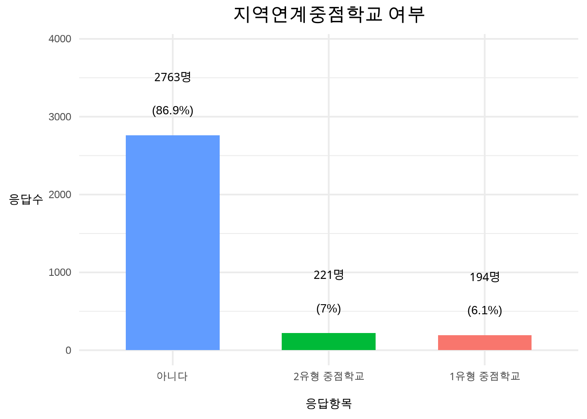
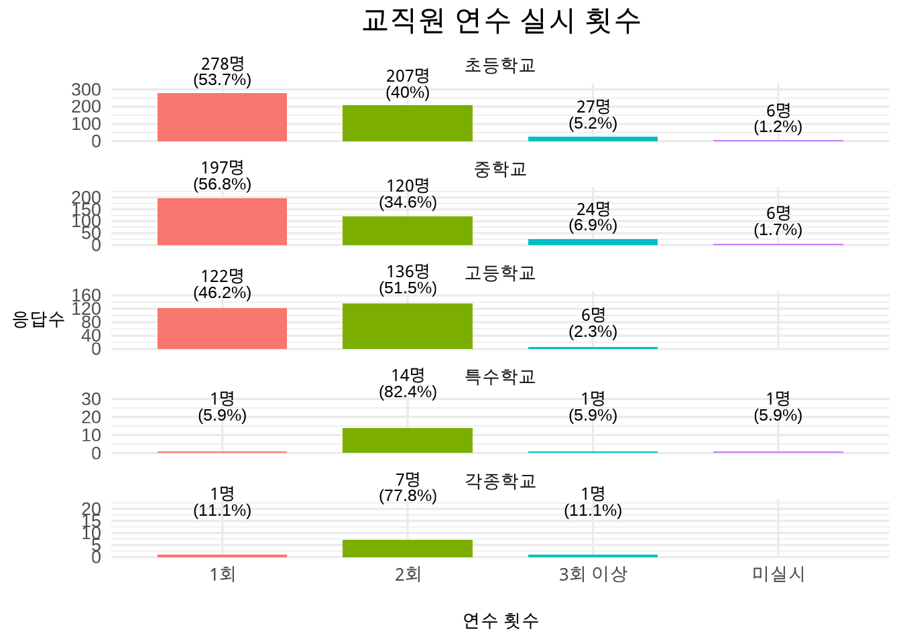
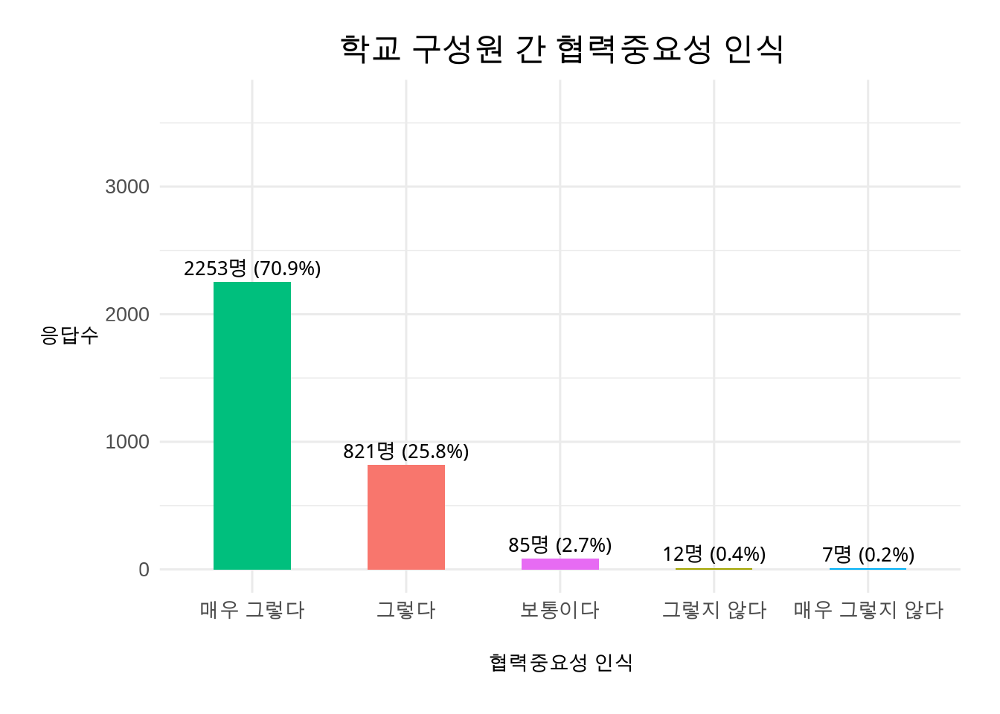
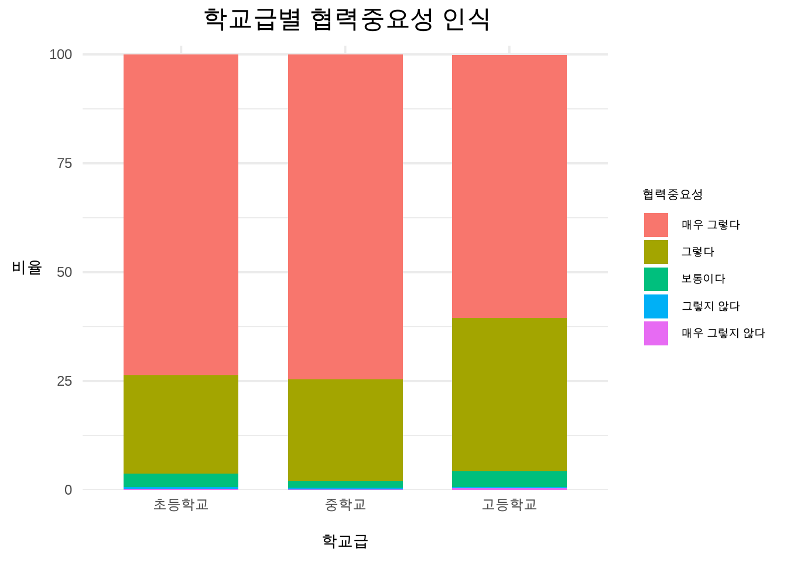

# A tibble: 6 × 3
응답기관 응답자수 비율
<chr> <int> <chr>
1 초등학교 1282 40.34
2 중학교 1109 34.90
3 고등학교 718 22.59
4 특수학교 46 1.45
5 각종학교 23 0.72
6 합계 3178 100.001. 실태조사 개요
목적: 학생맞춤통합지원 체계안착을 위한 운영실태 조사를 통해 정책 인식도, 운영현황, 교육구성원 간 협력의 중요성과 필요성 인식 및 협력실태를 파악함으로써 향후 체계안착을 위한 개선방안 마련
조사대상자: 초ㆍ중ㆍ고 학교장, 교감, 교사 등 총 3,178명이 실태조사에 참여하였음 (문항에 따라서 응답 대상자수가 상이함)
조사방법: 교육연구정보원 통계분석(유레카) 시스템을 활용하여 데이터를 집계하였으며, R Stutio로 데이터 분석을 실시
2. 실태조사 (일반현황)
- 참고사항: 기술통계 현황에서 ’n’은 응답자수를 의미하며, pct는 퍼센트를 의미함
문항1. 귀하의 소속 학교급은 무엇입니까?
① 초등학교 ② 중학교 ③ 고등학교 ④ 특수학교 ⑤ 각종학교
설문응답자는 총 3,178명으로 초등학교 소속이 1,282명(40.34%), 중학교 소속이 1,109명(34.9%), 고등학교 소속이 718명(22.59%), 특수학교 소속이 46명(1.45%), 각종학교 소속은 23명(0.72%)이 설문에 응답하였음
문항2. 귀하 소속기관의 유형은?
① 공립 ② 사립 ③ 국립
설문응답자 3,178명 중에서 공립학교 소속은 2,348명(73.9%), 사립학교 소속은 810명(25.5%), 국립학교 소속은 20명(0.6%)이 응답하였음
# A tibble: 4 × 3
응답기관 응답자수 비율
<chr> <int> <dbl>
1 공립 2348 73.9
2 사립 810 25.5
3 국립 20 0.6
4 합계 3178 100 문항3. 귀하 소속기관의 소재 자치구는?
① 강남구 ② 강동구 ③ 강북구 ④ 강서구 ⑤ 관악구 ⑥ 광진구 ⑦ 구로구 ⑧ 금천구 ⑨ 노원구 ⑩ 도봉구 ⑪ 동대문구 ⑫ 동작구 ⑬ 마포구 ⑭ 서대문구 ⑮ 서초구 ⑯ 성동구 ⑰ 성북구 ⑱ 송파구 ⑲ 양천구 ⑳ 영등포구 ㉑ 용산구 ㉒ 은평구 ㉓ 종로구 ㉔ 중구 ㉕ 중랑구
설문 응답자 3,178명 중에서 소속기관 소재지가 노원구인 응답자가 236명(7.426%)으로 가장 많았으며, 다음으로 강남구가 소재지인 응답자는 212명(6.671%)이며 중구가 73명(2.297%로)으로 25개 자치구 중에서 응답자 수가 가장 적었음
# A tibble: 26 × 3
label n pct_str
<chr> <int> <chr>
1 노원구 236 7.426
2 강남구 212 6.671
3 송파구 201 6.325
4 강서구 192 6.042
5 은평구 176 5.538
6 성북구 165 5.192
7 양천구 153 4.814
8 강동구 141 4.437
9 관악구 141 4.437
10 동작구 138 4.342
11 서초구 120 3.776
12 마포구 117 3.682
13 중랑구 114 3.587
14 구로구 111 3.493
15 영등포구 99 3.115
16 서대문구 98 3.084
17 금천구 97 3.052
18 광진구 96 3.021
19 동대문구 91 2.863
20 성동구 84 2.643
21 용산구 84 2.643
22 강북구 84 2.643
23 도봉구 80 2.517
24 종로구 75 2.360
25 중구 73 2.297
26 합계 3178 100.00 
문항4. 귀하의 소속기관은 교육부 학생맞춤통합지원 선도학교입니까?
① 그렇다 ② 아니다
설문 응답자 3,178명 중에서 선도학교 소속인 응답자는 212명(6.7%), 선도학교 소속이 아닌 응답자는 2,966명(93.3%)이 설문에 응답하였음
# A tibble: 3 × 3
응답 n pct
<chr> <int> <dbl>
1 아니다 2966 93.3
2 그렇다 212 6.7
3 합계 3178 100 문항5. 귀하의 소속기관은 교육복지사업학교 거점학교(지역사회교육전문가 배치학교) 입니까?
① 그렇다 ② 아니다
설문 응답자 3,178명 중에서 거점학교 소속 응답자는 811명(25.5%), 거점학교 소속이 아닌 응답자는 2,367명(74.5%)가 설문에 응답하였음
# A tibble: 3 × 3
응답 n pct
<chr> <int> <dbl>
1 아니다 2367 74.5
2 그렇다 811 25.5
3 합계 3178 100 문항6. 귀하의 소속기관은 ’지역연계중점학교’입니까?
① 그렇다 ② 아니다
설문 응답자 3,178명 중에서 1유형 중점학교 소속 응답자는 194명(6.1%), 2유형 중점학교 소속 응답자는 221명(7%), 중점학교 소속이 아닌 응답자는 2,763명(86.9%)이 설문에 응답하였음
# A tibble: 4 × 3
응답 n pct_label
<chr> <int> <chr>
1 아니다 2763 86.9
2 2유형 중점학교 221 7.0
3 1유형 중점학교 194 6.1
4 합계 3178 100.0 
문항7. 귀하의 직위(직급)를 선택해 주세요.
① 교장 ② 교감 ③ 교사 ④ 상담교사 ⑤ 보건교사 ⑥ 영양교사 ⑦ 행정실장 ⑧ 지역사회교육전문가 ⑨ 상담사 ⑩ 일반 교직원
설문 응답자 3,178명 중에서 교사는 1,469명(46.2%), 교감은 780명(24.5%), 학교장은 487명(15.3%), 상담교사는 156명(4.9%), 지역사회교육전문가는 125명(3.9%), 일반 교직원은 65명(2.0%), 상담사는 51명(1.6%), 보건교사는 41명(1.3%), 영양교사는 2명(0.1%), 행정실장은 2명(0.1%)이 설문에 응답하였음
# A tibble: 11 × 3
응답 n pct_label
<chr> <int> <chr>
1 교사 1469 46.2
2 교감 780 24.5
3 학교장 487 15.3
4 상담교사 156 4.9
5 지역사회교육전문가 125 3.9
6 일반 교직원 65 2.0
7 상담사 51 1.6
8 보건교사 41 1.3
9 영양교사 2 0.1
10 행정실장 2 0.1
11 합계 3178 100.0 문항8. 귀하가 보직교사일 경우 보직의 명칭을 적어주세요. (예: 수업연구부장 등)
설문 응답자 1,105명 중에서 교육복지부장은 345명(31.2%), 교무부장은 188명(17%), 생활부장은 161명(14.6%), 학년부장은 86명(7.8%), 연구부장은 77명(7%), 상담부장은 64명(5.8%), 진로교육부장은 38명(3.4%), 교육과정부장은 26명(2.4%), 기초학력부장은 17명(1.5%)이고 이외 기타 보직의 부장이 103명(9.3%)이었음
# A tibble: 11 × 3
직책 n pct
<chr> <int> <dbl>
1 교육복지부장 345 31.2
2 교무부장 188 17
3 생활부장 161 14.6
4 기타 103 9.3
5 학년부장 86 7.8
6 연구부장 77 7
7 상담부장 64 5.8
8 진로교육부장 38 3.4
9 교육과정부장 26 2.4
10 기초학력부장 17 1.5
11 합계 1105 100 3. 실태조사 (학생맞춤통합지원 정책에 대한 인식 조사)
문항9. 학생맞춤통합지원 정책에 대해 어느정도 알고 계십니까?
① 잘 알고 있다 ② 조금 알고 있다 ③ 보통이다 ④ 잘 모른다 ⑤ 전혀 모른다
학생맞춤통합지원 정책 인식도 문항에 총 응답자는 3,178명이며, 학생맞춤통합지원 정책을 잘 알고 있다는 답변한 응답자는 1,268명(39.9%), 조금 알고 있다고 답변한 응답자는 1,351명(42.5%), 보통이다고 답변한 응답자는 391명(12.3%), 잘 모른다고 답변한 응답는 153명(4.8%), 전혀 모른다고 답변한 응답는 15명(0.5%)으로 나타났음
# A tibble: 6 × 3
응답 n pct
<chr> <int> <dbl>
1 조금 알고 있다 1351 42.5
2 잘 알고 있다 1268 39.9
3 보통이다 391 12.3
4 잘 모른다 153 4.8
5 전혀 모른다 15 0.5
6 합계 3178 100 분석과정
1) 응답자 유형 분류: 직책별(학교장, 교감, 교사 등), 학교급별(초등학교, 중학교, 고등학교), 설립별(공립, 사립)으로 구분하였음. 유형별 비교를 위해 응답자 수가 적은 특수학교, 각종학교 및 공립학교는 조사대상자에서 제외하였음. 이와 같이 응답자 유형을 분류하고 응답자 집단 간의 답변 분포를 비교하였음.
2) 인식도 점수 산출방법: ’잘 알고 있다’는 5점을 부여하고 ’조금 알고 있다’는 4점, ’보통이다’는 3점, ’잘 모른다’는 2점, ’전혀 모른다’는 1점을 부여하여 인식도 점수를 산출하였음.
이와 같이 산출한 점수를 직책별(학교장, 교감, 교사 등), 학교급별(초등학교, 중학교, 고등학교), 설립별(공립, 사립)으로 구분하여 집단 간 평균 점수차이가 유의미한지 분석하였음
문항 9-1. 직책별 정책인식도 분석
직책별 응답자는 총 3,090명이며 이 중에서 학교장은 474명(15.34%), 교감은 761명(24.63%), 교사 등은 1,855명(60.03%)이 응답하였음.
학교장 응답 중에서 매우 그렇다는 222명(46.8%), 그렇다는 198명(41.8%), 보통이다는 51명(10.8%), 그렇지 않다는 3명(0.6%)이었음.
교감 응답 중에서 매우 그렇다는 295명(38.8%), 그렇다는 359명(47.2%), 보통이다는 87명(11.4%), 그렇지 않다는 18명(2.4%), 매우 그렇지 않다는 2명(0.3%)이었음
교사 등 응답 중에서 매우 그렇다는 698명(37.63%), 그렇다는 783명(42.21%), 보통이다는 312명(16.82%), 그렇지 않다는 47명(2.53%), 매우 그렇지 않다는 15명(0.81%)이었음
# A tibble: 17 × 4
직책 n pct 정책인식도
<chr> <int> <dbl> <chr>
1 학교장 304 64.1 잘 알고 있다
2 학교장 151 31.9 조금 알고 있다
3 학교장 17 3.6 보통이다
4 학교장 2 0.4 잘 모른다
5 학교장 474 100 합계
6 교감 415 54.5 잘 알고 있다
7 교감 320 42 조금 알고 있다
8 교감 24 3.2 보통이다
9 교감 2 0.3 잘 모른다
10 교감 761 100 합계
11 교사 등 841 45.3 조금 알고 있다
12 교사 등 532 28.7 잘 알고 있다
13 교사 등 339 18.3 보통이다
14 교사 등 130 7 잘 모른다
15 교사 등 13 0.7 전혀 모른다
16 교사 등 1855 100 합계
17 전체 합계 3090 100 합계
Pearson's Chi-squared test
data: tab1
X-squared = 402.58, df = 8, p-value < 2.2e-16학교장(4.6), 교감(4.51), 교사 등(3.94) 직책별로 정책인식도 평균점수를 비교한 결과, 학교장과 교감 간에는 유의미한 차이는 없었지만, 학교장-교사 등, 교감-교사 등 간에는 유의미한 인식도 차이가 있는 것으로 나타남
(정책인식도 평균점수는 학교장 >교사 등, 교감 > 교사 등 순으로 나타남)
# A tibble: 3 × 4
직책 평균 표준편차 n
<fct> <dbl> <dbl> <int>
1 학교장 4.6 0.58 474
2 교감 4.51 0.57 761
3 교사 등 3.94 0.9 1855 Df Sum Sq Mean Sq F value Pr(>F)
직책 2 268.9 134.44 217 <2e-16 ***
Residuals 3087 1912.2 0.62
---
Signif. codes: 0 '***' 0.001 '**' 0.01 '*' 0.05 '.' 0.1 ' ' 1 Tukey multiple comparisons of means
95% family-wise confidence level
Fit: aov(formula = 정책인식도점수 ~ 직책, data = dat_filtered)
$직책
diff lwr upr p adj
교감-학교장 -0.08850502 -0.1964890 0.01947897 0.1326704
교사 등-학교장 -0.65418927 -0.7491690 -0.55920953 0.0000000
교사 등-교감 -0.56568425 -0.6451284 -0.48624009 0.0000000문항 9-2. 학교급별 정책인식도 분석
학교급별 응답자는 총 3,090명이며, 초등학교 응답자는 1,277명(41.33%), 중학교 응답자는 1,100명(35.60%), 고등학교 응답자는 713명(23.07%)이 응답하였음
초등학교 응답 중에서 잘 알고 있다는 597명(46.8%), 조금 알고 있다는 507명(39.7%), 보통이다는 126명(9.87%), 잘 모른다는 44명(3.45%), 전혀 모른다는 3명(0.23%)이었음
중학교 응답 중에서 잘 알고 있다는 499명(45.4%), 조금 알고 있다는 427명(38.8%), 보통이다는 122명(11.1%), 잘 모른다는 48명(4.36%), 전혀 모른다는 4명(0.36%)이었음
고등학교 응답 중에서 잘 알고 있다는 306명(42.9%), 조금 알고 있다는 227명(31.8%), 보통이다는 132명(18.5%), 잘 모른다는 42명(5.89%), 전혀 모른다는 6명(0.84%)이었음
# A tibble: 18 × 4
학교급 n pct 정책인식도
<fct> <int> <dbl> <chr>
1 초등학교 597 46.8 잘 알고 있다
2 초등학교 507 39.7 조금 알고 있다
3 초등학교 126 9.87 보통이다
4 초등학교 44 3.45 잘 모른다
5 초등학교 3 0.23 전혀 모른다
6 초등학교 1277 100 합계
7 중학교 499 45.4 조금 알고 있다
8 중학교 427 38.8 잘 알고 있다
9 중학교 122 11.1 보통이다
10 중학교 48 4.36 잘 모른다
11 중학교 4 0.36 전혀 모른다
12 중학교 1100 100.0 합계
13 고등학교 306 42.9 조금 알고 있다
14 고등학교 227 31.8 잘 알고 있다
15 고등학교 132 18.5 보통이다
16 고등학교 42 5.89 잘 모른다
17 고등학교 6 0.84 전혀 모른다
18 고등학교 713 100 합계
Pearson's Chi-squared test
data: tab_school
X-squared = 71.094, df = 8, p-value = 2.975e-12초등학교(4.29), 중학교(4.18), 고등학교(3.99) 학교급별 정책인식도 평균점수를 비교한 결과, 초등학교, 중학교, 고등학교 정책인식도 평균 점수에는 유의미한 차이가 있는 것으로 나타남 (초등학교 > 중학교 > 고등학교)
# A tibble: 3 × 4
학교급 평균 표준편차 n
<fct> <dbl> <dbl> <int>
1 초등학교 4.29 0.8 1277
2 중학교 4.18 0.82 1100
3 고등학교 3.99 0.9 713 Df Sum Sq Mean Sq F value Pr(>F)
학교급 2 41.9 20.970 30.26 9.64e-14 ***
Residuals 3087 2139.1 0.693
---
Signif. codes: 0 '***' 0.001 '**' 0.01 '*' 0.05 '.' 0.1 ' ' 1 Tukey multiple comparisons of means
95% family-wise confidence level
Fit: aov(formula = 정책인식도점수 ~ 학교급, data = dat_score)
$학교급
diff lwr upr p adj
중학교-초등학교 -0.1137830 -0.1940771 -0.03348891 0.0025946
고등학교-초등학교 -0.3026916 -0.3939446 -0.21143858 0.0000000
고등학교-중학교 -0.1889086 -0.2827552 -0.09506195 0.0000074# A tibble: 3 × 5
학교급 평균 표준편차 n group
<chr> <dbl> <dbl> <int> <chr>
1 초등학교 4.29 0.8 1277 a
2 중학교 4.18 0.82 1100 b
3 고등학교 3.99 0.9 713 c 문항 9-3. 설립별 정책인식도 분석
설립별 응답자는 총 3,090명이며 이 중에서 공립학교 응답자는 2,317명(74.5%), 사립학교 응답자는 761명(25.5%)이 응답하였음.
공립학교 응답 중에서 매우 그렇다는 1,660명(71.6%), 그렇다는 582명(25.1%), 보통이다는 63명(2.72%), 그렇지 않다는 8명(0.35%), 매우 그렇지 않다는 4명(0.17%)이었음
사립학교 응답 중에서 매우 그렇다는 532명(68.8%), 그렇다는 215명(27.8%), 보통이다는 19명(2.46%), 그렇지 않다는 4명(0.52%), 매우 그렇지 않다는 3명(0.39%)이었음
# A tibble: 12 × 4
설립 n pct 정책인식도
<fct> <int> <dbl> <chr>
1 공립 988 42.6 잘 알고 있다
2 공립 970 41.9 조금 알고 있다
3 공립 254 11 보통이다
4 공립 98 4.2 잘 모른다
5 공립 7 0.3 전혀 모른다
6 공립 2317 100 합계
7 사립 342 44.2 조금 알고 있다
8 사립 263 34 잘 알고 있다
9 사립 126 16.3 보통이다
10 사립 36 4.7 잘 모른다
11 사립 6 0.8 전혀 모른다
12 사립 773 100 합계
Pearson's Chi-squared test
data: tab_found
X-squared = 28.175, df = 4, p-value = 1.149e-05공립학교(4.68), 사립학교(4.64) 평균점수를 비교한 결과, 공립학교와 사립학교 간에는 정책인식도 평균 점수에는 유의미한 차이가 있는 것으로 나타남
# A tibble: 2 × 4
설립 평균 표준편차 n
<fct> <dbl> <dbl> <int>
1 공립 4.22 0.83 2317
2 사립 4.06 0.87 773# A tibble: 2 × 2
설립 shapiro_p
<fct> <dbl>
1 공립 1.48e-47
2 사립 7.34e-28
Welch Two Sample t-test
data: 정책인식도점수 by 설립
t = 4.5487, df = 1268.6, p-value = 5.915e-06
alternative hypothesis: true difference in means between group 공립 and group 사립 is not equal to 0
95 percent confidence interval:
0.09231806 0.23234452
sample estimates:
mean in group 공립 mean in group 사립
4.223133 4.060802 문항10. [9번 문항에서 ①번 혹은 ②번을 선택한 분들만 답변해 주시기 바랍니다.] 학생맞춤통합지원 제도를 인지하게 된 경로는 무엇입니까?
① 교육부또는 교육(지원)청 공문(기본계획 안내 공문 등) ② 연수 또는 회의 ③ 뉴스 등 미디어 보도 및 홍보자료 ④ 주변 다른 교직원들을 통해서 ⑤ 기타
학생맞춤통합지원에 대해 인지하게 된 경로에 대한 문항에 2,619명이 응답하였고, 연수 또는 회의를 통해서 알게되었다는 응답자가 1,379명(52.7%)이고 교육부 또는 교육청 공문을 통해서라고 답변한 응답자는 1,135명(43.3%)이고 다음으로 주변 교직원을 통해 인지하게 되었다고 답변한 응답자는 60명(2.2%) 등 순으로 나타났음
# A tibble: 6 × 3
응답10 n pct
<chr> <int> <dbl>
1 " 연수 또는 회의" 1379 52.7
2 " 교육부/교육청 공문" 1135 43.3
3 " 주변 교직원" 60 2.3
4 " 기타" 41 1.6
5 " 뉴스 등 미디어" 4 0.2
6 "합계" 2619 100 문항11. 학생맞춤통합지원 제도가 충분히 안내 및 홍보되고 있다고 보십니까?
① 매우 그렇다 ② 그렇다 ③ 보통이다 ④ 그렇지 않다 ⑤ 매우 그렇지 않다
학생맞춤통합지원 홍보의 충분성 문항에 총 응답자는 3,178명이며 매우 그렇다고 답변한 응답자는 401명(12.6%), 그렇다고 답변한 응답자는 1,247명(39.2%), 보통이다고 답변한 응답자는 1,117명(35.1%), 그렇지 않다고 답변한 응답자는 351명(11%), 매우 그렇지 않다고 답변한 응답자는 62명(2%)로 나타났음
# A tibble: 6 × 3
응답11 n pct
<chr> <int> <dbl>
1 그렇다 1247 39.2
2 보통이다 1117 35.1
3 매우 그렇다 401 12.6
4 그렇지 않다 351 11
5 매우 그렇지 않다 62 2
6 합계 3178 99.9분석과정
1) 응답자 유형 분류: 직책별(학교장, 교감, 교사 등), 학교급별(초등학교, 중학교, 고등학교), 설립별(공립, 사립)으로 구분하였음. 유형별 비교를 위해 응답자 수가 적은 특수학교, 각종학교 및 공립학교는 조사대상자에서 제외하였음. 이와 같이 응답자 유형을 분류하고 응답자 집단 간의 답변 분포를 비교하였음
2) 응답점수 산출방법: ’매우 그렇다’는 5점을 부여하고 ’그렇다’는 4점, ’보통이다’는 3점, ’그렇지 않다’는 2점, ’매우 그렇지 않다’는 1점을 부여하여 인식도 점수를 산출하였음
문항 11-1. 직책별 홍보충분성 분석
직책별 응답자는 총 3,090명이며 이 중에서 학교장은 474명(15.34%), 교감은 761명(24.63%), 교사 등은 1,855명(60.03%)이 응답하였음.
학교장 응답 중에서 매우 그렇다는 90명(19%), 그렇다는 228명(48.1%), 보통이다는 128명(27%), 그렇지 않다는 26명(5.5%), 매우 그렇지 않다는 2명(0.4%)이었음.
교감 응답 중에서 매우 그렇다는 113명(14.8%), 그렇다는 369명(48.5%), 보통이다는 236명(31%), 그렇지 않다는 37명(4.9%), 매우 그렇지 않다는 6명(0.8%)이었음.
교사 등 응답 중에서 매우 그렇다는 194명(10.5%), 그렇다는 627명(33.8%), 보통이다는 718명(38.7%), 그렇지 않다는 268명(14.4%), 매우 그렇지 않다는 48명(2.6%)이었음.
# A tibble: 18 × 4
직책 n pct 홍보충분성
<fct> <int> <dbl> <chr>
1 학교장 228 48.1 그렇다
2 학교장 128 27 보통이다
3 학교장 90 19 매우 그렇다
4 학교장 26 5.5 그렇지 않다
5 학교장 2 0.4 매우 그렇지 않다
6 학교장 474 100 합계
7 교감 369 48.5 그렇다
8 교감 236 31 보통이다
9 교감 113 14.8 매우 그렇다
10 교감 37 4.9 그렇지 않다
11 교감 6 0.8 매우 그렇지 않다
12 교감 761 100 합계
13 교사 등 718 38.7 보통이다
14 교사 등 627 33.8 그렇다
15 교사 등 268 14.4 그렇지 않다
16 교사 등 194 10.5 매우 그렇다
17 교사 등 48 2.6 매우 그렇지 않다
18 교사 등 1855 100 합계
Pearson's Chi-squared test
data: tab1_11
X-squared = 159.66, df = 8, p-value < 2.2e-16학교장(3.8), 교감(3.72), 교사 등(3.35) 간 홍보충분성 대한 평균점수를 비교한 결과, 학교장과 교감 간에는 유의미한 차이는 없었지만, 학교장-교사 등, 교감-교사 등 간에는 유의미한 인식도 차이가 있는 것으로 나타남 (학생맞춤통합지원 홍보가 충분한지에 대해 학교장 >교사 등, 교감 > 교사 등 순으로 나타남)
# A tibble: 3 × 4
직책 평균 표준편차 n
<fct> <dbl> <dbl> <int>
1 학교장 3.8 0.82 474
2 교감 3.72 0.8 761
3 교사 등 3.35 0.94 1855 Df Sum Sq Mean Sq F value Pr(>F)
직책 2 118.9 59.43 75.02 <2e-16 ***
Residuals 3087 2445.4 0.79
---
Signif. codes: 0 '***' 0.001 '**' 0.01 '*' 0.05 '.' 0.1 ' ' 1 Tukey multiple comparisons of means
95% family-wise confidence level
Fit: aov(formula = 홍보충분성점수 ~ 직책, data = dat_filtered)
$직책
diff lwr upr p adj
교감-학교장 -0.07999135 -0.2021056 0.04212288 0.2741993
교사 등-학교장 -0.44652496 -0.5539333 -0.33911664 0.0000000
교사 등-교감 -0.36653361 -0.4563734 -0.27669378 0.0000000문항 11-2. 학교급별 홍보충분성 분석
학교급별 응답자는 총 3,090명이며, 초등학교 응답자는 1,277명(41.33%), 중학교 응답자는 1,100명(35.60%), 고등학교 응답자는 713명(23.07%)이 응답하였음.
초등학교 응답 중에서 매우 그렇다는 194명(15.2%), 그렇다는 527명(41.3%), 보통이다는 425명(33.3%), 그렇지 않다는 104명(8.1%), 매우 그렇지 않다는 27명(2.1%)이었음.
중학교 응답 중에서 매우 그렇다는 153명(13.9%), 그렇다는 436명(39.6%), 보통이다는 373명(33.9%), 그렇지 않다는 123명(11.2%), 매우 그렇지 않다는 15명(1.4%)이었음.
고등학교 응답 중에서 매우 그렇다는 50명(7%), 그렇다는 261명(36.6%), 보통이다는 284명(39.8%), 그렇지 않다는 104명(14.6%), 매우 그렇지 않다는 14명(2%)이었음.
# A tibble: 18 × 4
학교급 n pct 홍보충분성
<fct> <int> <dbl> <chr>
1 초등학교 527 41.3 그렇다
2 초등학교 425 33.3 보통이다
3 초등학교 194 15.2 매우 그렇다
4 초등학교 104 8.1 그렇지 않다
5 초등학교 27 2.1 매우 그렇지 않다
6 초등학교 1277 100 합계
7 중학교 436 39.6 그렇다
8 중학교 373 33.9 보통이다
9 중학교 153 13.9 매우 그렇다
10 중학교 123 11.2 그렇지 않다
11 중학교 15 1.4 매우 그렇지 않다
12 중학교 1100 100 합계
13 고등학교 284 39.8 보통이다
14 고등학교 261 36.6 그렇다
15 고등학교 104 14.6 그렇지 않다
16 고등학교 50 7 매우 그렇다
17 고등학교 14 2 매우 그렇지 않다
18 고등학교 713 100 합계
Pearson's Chi-squared test
data: tab_school_11
X-squared = 54.071, df = 8, p-value = 6.689e-09초등학교(3.59), 중학교(3.54), 고등학교(3.32) 간 홍보충분성 평균점수를 비교한 결과, 초등학교-고등학교, 중학교-고등학교 학교급 간 정책인식도 평균 점수에는 유의미한 차이가 있는 것으로 나타났으며, 초등학교와 중학교 평균섬수 차이는 유의미하게 나타나지 않음 (초등학교 > 중학교 > 고등학교)undefined
# A tibble: 3 × 4
학교급 평균 표준편차 n
<fct> <dbl> <dbl> <int>
1 초등학교 3.59 0.91 1277
2 중학교 3.54 0.91 1100
3 고등학교 3.32 0.88 713 Df Sum Sq Mean Sq F value Pr(>F)
학교급 2 34.9 17.444 21.29 6.56e-10 ***
Residuals 3087 2529.3 0.819
---
Signif. codes: 0 '***' 0.001 '**' 0.01 '*' 0.05 '.' 0.1 ' ' 1 Tukey multiple comparisons of means
95% family-wise confidence level
Fit: aov(formula = 홍보충분성점수 ~ 학교급, data = dat_filtered)
$학교급
diff lwr upr p adj
중학교-초등학교 -0.05734107 -0.1446520 0.02996985 0.2723794
고등학교-초등학교 -0.27161749 -0.3708450 -0.17238999 0.0000000
고등학교-중학교 -0.21427642 -0.3163242 -0.11222865 0.0000027문항 11-3. 설립별 홍보충분성 분석
설립별 응답자는 총 3,090명이며 이 중에서 공립학교 응답자는 2,317명(74.5%), 사립학교 응답자는 761명(25.5%)이 응답하였음
공립학교 응답건수 중에서 매우 그렇다는 991명(42.8%), 그렇다는 965명(41.6%), 보통이다는 310명(13.4%), 그렇지 않다는 41명(1.8%), 매우 그렇지 않다는 10명(0.4%)이었음
사립학교 응답건수 중에서 매우 그렇다는 224명(29%), 그렇다는 375명(27.8%), 보통이다는 140명(18.1%), 그렇지 않다는 27명(3.5%), 매우 그렇지 않다는 7명(0.9%)이었음
# A tibble: 12 × 4
설립 n pct 홍보충분성
<fct> <int> <dbl> <chr>
1 공립 936 40.4 그렇다
2 공립 787 34 보통이다
3 공립 321 13.9 매우 그렇다
4 공립 235 10.1 그렇지 않다
5 공립 38 1.6 매우 그렇지 않다
6 공립 2317 100 합계
7 사립 295 38.2 보통이다
8 사립 288 37.3 그렇다
9 사립 96 12.4 그렇지 않다
10 사립 76 9.8 매우 그렇다
11 사립 18 2.3 매우 그렇지 않다
12 사립 773 100 합계
Pearson's Chi-squared test
data: tab_found_11
X-squared = 15.978, df = 4, p-value = 0.003049공립학교(3.55), 사립학교(3.4) 간 홍보충분성 평균점수를 비교한 결과, 공립학교와 사립학교 간에는 정책인식도 평균 점수에는 유의미한 차이가 있는 것으로 나타남
# A tibble: 2 × 4
설립 평균 표준편차 n
<fct> <dbl> <dbl> <int>
1 공립 3.55 0.91 2317
2 사립 3.4 0.91 773# A tibble: 2 × 2
설립 shapiro_p
<fct> <dbl>
1 공립 3.34e-38
2 사립 5.27e-23
Welch Two Sample t-test
data: 홍보충분성점수 by 설립
t = 3.9312, df = 1324.6, p-value = 8.889e-05
alternative hypothesis: true difference in means between group 공립 and group 사립 is not equal to 0
95 percent confidence interval:
0.07433552 0.22242485
sample estimates:
mean in group 공립 mean in group 사립
3.546828 3.398448 4. 실태조사 (학생맞춤통합지원 운영현황 조사)
* 응답자 선정에 관항
운영 현황조사 문항들은 중복응답을 방지하기 위해 학교별 1명씩만 응답자를 선별함. 응답자는 교감을 우선 선별하고, 다음으로 학교장, 교사 등 순으로 학교별 응답자를 추출하였음.
문항12. 학교 내에 학생맞춤통합지원팀이 구성되어 있습니까?
① 그렇다 ② 아니다
학생맞춤통합지원팀 구성여부 문항에 대한 응답자는 총 1,155명이며 초등학교 응답자는 518명(44.8%), 중학교 응답자는 347명(30%), 고등학교 응답자는 264명(22.9%), 특수학교 응답자는 17명(1.5%), 각종학교 응답자는 9명(0.8%)이었음
초등학교 응답 중에서 학생맞춤통합지원팀이 구성되어 있다는 응답은 472명(91.1%), 구성되어 있지 않다는 46명(8.9%)으로 나타났음
중학교 응답자 중에서 학생맞춤통합지원팀이 구성되어 있다는 응답은 311명(89.6%), 구성되어 있지 않다는 36명(10.4%)으로 나타났음
고등학교 응답 중에서 학생맞춤통합지원팀이 구성되어 있다는 응답은 208명(78.8%), 구성되어 있지 않다는 56명(21.2%)으로 나타났음
특수학교 응답 중에서 학생맞춤통합지원팀이 구성되어 있다는 응답은 12명(70.6%), 구성되어 있지 않다는 5명(29.4%)으로 나타났음
각종학교 응답 중에서 학생맞춤통합지원팀이 구성되어 있다는 응답은 5명(55.6%), 구성되어 있지 않다는 4명(44.4%)으로 나타났음
# A tibble: 15 × 4
학교급 n pct 문항12
<fct> <int> <dbl> <fct>
1 초등학교 472 91.1 구성되어 있다
2 초등학교 46 8.9 구성되어 있지 않다
3 초등학교 518 100 합계
4 중학교 311 89.6 구성되어 있다
5 중학교 36 10.4 구성되어 있지 않다
6 중학교 347 100 합계
7 고등학교 208 78.8 구성되어 있다
8 고등학교 56 21.2 구성되어 있지 않다
9 고등학교 264 100 합계
10 특수학교 12 70.6 구성되어 있지 않다
11 특수학교 5 29.4 구성되어 있다
12 특수학교 17 100 합계
13 각종학교 5 55.6 구성되어 있다
14 각종학교 4 44.4 구성되어 있지 않다
15 각종학교 9 100 합계 문항13. 학생맞춤통합지원팀이 구성방법은?
① 기존 위원회 활용 ② 별도로 팀을 구성하여 운영
학생맞춤통합지원팀 구성방법에 대한 응답자는 총 1,001명이며 초등학교 응답자는 472명(47.15%), 중학교 응답자는 311명(31.07%), 고등학교 응답자는 208명(20.78%), 특수학교 응답자는 5명(0.5%), 각종학교 응답자는 5명(0.5%)이었음
초등학교 응답 중에서 기존 위원회를 활용한다는 응답자는 275명(58.3%), 별도로 팀을 구성하여 운영한다는 응답자는 197명(41.7%)으로 나타났음
중학교 응답 중에서 기존 위원회를 활용한다는 응답자는 210명(67.5%), 별도로 팀을 구성하여 운영한다는 응답자는 101명(32.5%)로 나타났음
고등학교 응답 중에서 기존 위원회를 활용한다는 응답자는 129명(62%), 별도로 팀을 구성하여 운영한다는 응답자는 79명(38%)으으로 나타났음
특수학교 응답 중에서 기존 위원회 활용은 5명(100%)으로 나타났음
각종학교 응답 중에서 기존 위원회 활용은 5명(100%)으로 나타났음
# A tibble: 13 × 4
학교급 n pct 문항13
<fct> <int> <dbl> <chr>
1 초등학교 275 58.3 기존 위원회 활용
2 초등학교 197 41.7 별도로 팀을 구성하여 운영
3 초등학교 472 100 합계
4 중학교 210 67.5 기존 위원회 활용
5 중학교 101 32.5 별도로 팀을 구성하여 운영
6 중학교 311 100 합계
7 고등학교 129 62 기존 위원회 활용
8 고등학교 79 38 별도로 팀을 구성하여 운영
9 고등학교 208 100 합계
10 특수학교 5 100 기존 위원회 활용
11 특수학교 5 100 합계
12 각종학교 5 100 기존 위원회 활용
13 각종학교 5 100 합계 문항14.[13번 문항에 ①로 답변한 경우만 응답] 기존 위원회를 활용한 경우는 어떤 위원회를 주로 활용하였습니까? (중복응답)
① 교육복지위원회(교육복지통합지원팀) ② 생명존중위원회(위기관리위원회) ③ 학습지원대상학생지원협의회 ④ 기타
기존위원회를 학생맞춤통합지원팀으로 활용한다는 응답건수는 744명이며 초등학교 응답건수는 309건(41.5%), 중학교 응답건수는 241건(32.4%), 고등학교 응답건수는 173건(23.3%), 특수학교 응답건수는 13건(1.7%), 각종학교 응답건수는 8건(1.1%)이었음
초등학교 응답 중에서 교육복지위원회를 활용한다는 응답건수는 223건(72.2%), 생명존중위원회를 활용한다는 응답건수는 46건(14.9%), 학급지원대상 학생지원협의회를 활용한다는 응답건수는21건(6.8%), 기타는 19건(6.1%)으로 나타났음
중학교 응답 중에서 교육복지위원회를 활용한다는 응답건수는 155건(64.3%), 생명존중위원회를 활용한다는 응답건수는 59건(24.5%), 학급지원대상 학생지원협의회를 활용한다는 응답건수는 12건(5%), 기타는 15건(6.2%)으로 나타났음
고등학교 응답 중에서 교육복지위원회를 활용한다는 응답건수는 105건(60.7%), 생명존중위원회를 활용한다는 응답건수는 54건(31.2%), 학급지원대상 학생지원협의회를 활용한다는 응답건수는 5건(2.9%), 기타는 9건(5.2%)으로 나타났음
특수학교 응답 중에서 교육복지위원회를 활용한다는 응답건수는 1건(7.7%), 생명존중위원회를 활용한다는 응답건수는 7건(53.8%), 기타는 5건(38.5%)으로 나타났음
각종학교 응답 중에서 교육복지위원회를 활용한다는 응답건수는 2건(25%), 생명존중위원회를 활용한다는 응답건수는 2건(25%), 학급지원대상 학생지원협의회를 활용한다는 응답건수는 2건(25%), 기타는 2건(25%)으로 나타났음
# A tibble: 24 × 4
학교급 n pct 문항14
<fct> <int> <dbl> <chr>
1 초등학교 223 72.2 교육복지위원회
2 초등학교 46 14.9 생명존중위원회
3 초등학교 21 6.8 학급지원대상학생지원협의회
4 초등학교 19 6.1 기타
5 초등학교 309 100 합계
6 중학교 155 64.3 교육복지위원회
7 중학교 59 24.5 생명존중위원회
8 중학교 15 6.2 기타
9 중학교 12 5 학급지원대상학생지원협의회
10 중학교 241 100 합계
11 고등학교 105 60.7 교육복지위원회
12 고등학교 54 31.2 생명존중위원회
13 고등학교 9 5.2 기타
14 고등학교 5 2.9 학급지원대상학생지원협의회
15 고등학교 173 100 합계
16 특수학교 7 53.8 생명존중위원회
17 특수학교 5 38.5 기타
18 특수학교 1 7.7 교육복지위원회
19 특수학교 13 100 합계
20 각종학교 2 25 교육복지위원회
21 각종학교 2 25 생명존중위원회
22 각종학교 2 25 학급지원대상학생지원협의회
23 각종학교 2 25 기타
24 각종학교 8 100 합계 문항15.학생맞춤통합지원팀 구성원은 누구입니까? (중복응답)
① 교장 ② 교감 ③ 담당부장교사 또는 담당업무교사 ④ 담임교사 ⑤ 상담교사 ⑥ 보건교사 ⑦ 영양교사 ⑧ 지역사회교육전문가 ⑨ 상담사 ⑩ 행정실장 ⑪ 기타
학생맞춤통합지원팀 구성원에 대한 응답건수는 6,135건이며 초등학교 응답건수는 2,759건(45%), 중학교 응답건수는 1,933건(31.5%), 고등학교 응답건수는 1,323건(21.6%), 특수학교 응답건수는 77건(1.3%), 각종학교 응답건수는 43건(0.7%)이었음
초등학교 응답 중에서 학생맞춤통합지원팀 주요 구성원 문항에 교감은 507건(18.4%), 담당부장 또는 담당교사는 507건(18.4%), 보건교사는 349건(12.8%), 담임교사는 349건(12.6%), 교장은 303건(11%), 상담교사는 268건(9.7%), 지역사회교육전문가는 183건(6.6%), 상담사는 169건(6.1%) 등으로 나타났음
중학교 응답 중에서 학생맞춤통합지원팀 주요 구성원 문항에 담당부장 또는 담당교사는 341건(17.6%), 교감은 336건(17.4%), 보건교사는 249건(12.9%), 상담교사는 245건(12.7%), 담임교사는 199건(10.3%), 교장은 186건(9.6%), 지역사회교육전문가는 146건(7.6%), 상담사는 133건(6.9%) 등으로 나타났음
고등학교 응답 중에서 학생맞춤통합지원팀 주요 구성원 문항에 교감은 258건(19.5%), 담당부장 또는 담당교사는 257건(19.4%), 상담교사는 205건(15.5%), 보건교사는 172건(13%), 담임교사는 151건(11.4%), 교장은 108건(8.2%), 상담사는 55건(4.2%), 지역사회교육전문가는 43건(3.3%) 등으로 나타났음
특수학교 응답 중에서 학생맞춤통합지원팀 주요 구성원 문항에 교감은 15건(19.5%), 담당부장 또는 담당교사는 15건(19.5%), 담임교사는 12건(15.6%), 보건교사는 11건(14.3%), 교장은 10건(13%), 교장은 10건(13%) 등으로 나타났음
각종학교 응답 중에서 학생맞춤통합지원팀 주요 구성원 문항에 담당부장 또는 담당교사는 9건(20.9%), 교감은 8건(18.6%), 보건교사는 6건(14%), 상담교사는 5건(11.6%), 행정실장은 5건(11.6%), 교장은 4건(9.3%), 담임교사는 4건(9.3%) 등으로 나타났음
# A tibble: 56 × 4
학교급 n pct 문항15
<fct> <int> <dbl> <chr>
1 초등학교 507 18.4 교감
2 초등학교 507 18.4 담당부장 또는 담당교사
3 초등학교 354 12.8 보건교사
4 초등학교 349 12.6 담임교사
5 초등학교 303 11 교장
6 초등학교 268 9.7 상담교사
7 초등학교 183 6.6 지역사회교육전문가
8 초등학교 169 6.1 상담사
9 초등학교 50 1.8 기타
10 초등학교 44 1.6 영양교사
11 초등학교 25 0.9 행정실장
12 초등학교 2759 100 합계
13 중학교 341 17.6 담당부장 또는 담당교사
14 중학교 336 17.4 교감
15 중학교 249 12.9 보건교사
16 중학교 245 12.7 상담교사
17 중학교 199 10.3 담임교사
18 중학교 186 9.6 교장
19 중학교 146 7.6 지역사회교육전문가
20 중학교 133 6.9 상담사
21 중학교 44 2.3 행정실장
22 중학교 41 2.1 기타
23 중학교 13 0.7 영양교사
24 중학교 1933 100 합계
25 고등학교 258 19.5 교감
26 고등학교 257 19.4 담당부장 또는 담당교사
27 고등학교 205 15.5 상담교사
28 고등학교 172 13 보건교사
29 고등학교 151 11.4 담임교사
30 고등학교 108 8.2 교장
31 고등학교 55 4.2 상담사
32 고등학교 43 3.3 지역사회교육전문가
33 고등학교 38 2.9 행정실장
34 고등학교 29 2.2 기타
35 고등학교 7 0.5 영양교사
36 고등학교 1323 100 합계
37 특수학교 15 19.5 교감
38 특수학교 15 19.5 담당부장 또는 담당교사
39 특수학교 12 15.6 담임교사
40 특수학교 11 14.3 보건교사
41 특수학교 10 13 교장
42 특수학교 4 5.2 기타
43 특수학교 4 5.2 상담교사
44 특수학교 4 5.2 지역사회교육전문가
45 특수학교 2 2.6 행정실장
46 특수학교 77 100 합계
47 각종학교 9 20.9 담당부장 또는 담당교사
48 각종학교 8 18.6 교감
49 각종학교 6 14 보건교사
50 각종학교 5 11.6 상담교사
51 각종학교 5 11.6 행정실장
52 각종학교 4 9.3 교장
53 각종학교 4 9.3 담임교사
54 각종학교 1 2.3 상담사
55 각종학교 1 2.3 지역사회교육전문가
56 각종학교 43 100 합계 문항16.학생맞춤통합지원팀(위원회)의 위원장은 누구입니까?
① 교장② 교감
학생맞춤통합지원팀 위원장이 누구인지에 대한 문항에 응답자수는 총 1,155명이며 초등학교 응답자수는 518명(50.4%), 중학교 응답자수는 347명(30%), 고등학교 응답자수는 264명(22.9%), 특수학교 응답자수는 17명(1.5%), 각종학교 응답건수는 9명(0.8%)이었음
초등학교 응답 중에서 학생맞춤통합지원팀 위원장이 교감이라는 응답자는 261명(50.4%), 교장이라는 응답자는 257명(49.6%)로 나타남
중학교 응답 중에서 학생맞춤통합지원팀 위원장이 교감이라는 응답자는 191명(55%), 교장이라는 응답자는 156명(45%)로 나타남
고등학교 응답 중에서 학생맞춤통합지원팀 위원장이 교감이라는 응답자는 174명(65.9%), 교장이라는 응답자는 90명(34.1%)로 나타남
특수학교 응답 중에서 학생맞춤통합지원팀 위원장이 교감이라는 응답자는 10명(58.8%), 교장이라는 응답자는 7명(41.2%)로 나타남
각종학교 응답 중에서 학생맞춤통합지원팀 위원장이 교감이라는 응답자는 5명(55.6%), 교장이라는 응답자는 4명(44.4%)로 나타남
# A tibble: 15 × 4
학교급 n pct 문항16
<fct> <int> <dbl> <chr>
1 초등학교 261 50.4 교감
2 초등학교 257 49.6 교장
3 초등학교 518 100 합계
4 중학교 191 55 교감
5 중학교 156 45 교장
6 중학교 347 100 합계
7 고등학교 174 65.9 교감
8 고등학교 90 34.1 교장
9 고등학교 264 100 합계
10 특수학교 10 58.8 교감
11 특수학교 7 41.2 교장
12 특수학교 17 100 합계
13 각종학교 5 55.6 교장
14 각종학교 4 44.4 교감
15 각종학교 9 100 합계 문항17.학생맞춤통합지원팀 회의에서 주된 역할을 수행하는 구성원은 누구입니까?
① 교장② 교감 ③ 담당부장 또는 담당교사 ④ 상담(교)사 ⑤ 지역사회교육전문가 ⑥ 기타
학생맞춤통합지원팀 회의에서 주된 역할을 수행하는 구성원 설문에 대한 응답자수는 총 1,155명이며 초등학교 응답자수는 518명(50.4%), 중학교 응답자수는 347명(30%), 고등학교 응답자수는 264명(22.9%), 특수학교 응답자수는 17명(1.5%), 각종학교 응답건수는 9명(0.8%)이었음
초등학교의 경우 학생맞춤통합지원팀 회의에서 주된 역할을 수행하는 구성원은 담당부장 또는 담당교사라고 답변한 응답자가 357명(68.9%) 교감은 82명(15.8%), 지역사회교육전문가는 42명(12.1%), 교감은 82명(15.8%), 지역사회교육전문가는 42명(8.1%), 교장은 16명(3.1%), 상담(교)사는 14명(2.7%) 등으로 나타났음
중학교의 경우 학생맞춤통합지원팀 회의에서 주된 역할을 수행하는 구성원은 담당부장 또는 담당교사라고 답변한 응답자가 232명(66.9%), 지역사회교육전문가는 42명(12.1%), 상담(교)사는 36명(10.4%), 교감은 26명(7.5%), 교장은 6명(1.7%) 등으로 나타났음
고등학교의 경우 학생맞춤통합지원팀 회의에서 주된 역할을 수행하는 구성원은 담당부장 또는 담당교사라고 답변한 응답자가 195명(73.9%), 상담(교)사는 37명(14%), 교감은 24명(9.1%), 교감은 24명(7.5%), 교장은 4명(1.5%), 지역사회교육전문가는 2명(0.8%) 등으로 나타났음
특수학교의 경우 학생맞춤통합지원팀 회의에서 주된 역할을 수행하는 구성원은 담당부장 또는 담당교사라고 답변한 응답자가 12명(70.6%), 교장은 2명(11.8%), 상담(교)사는 1명(5.9%) 등으로 나타났음
각종학교의 경우 학생맞춤통합지원팀 회의에서 주된 역할을 수행하는 구성원은 담당부장 또는 담당교사라고 답변한 응답자가 8명(88.9%), 상담(교)사는 1명(11.1%)로 나타났음
# A tibble: 29 × 4
학교급 n pct 문항17
<fct> <int> <dbl> <chr>
1 초등학교 357 68.9 담당부장 또는 담당교사
2 초등학교 82 15.8 교감
3 초등학교 42 8.1 지역사회교육전문가
4 초등학교 16 3.1 교장
5 초등학교 14 2.7 상담(교)사
6 초등학교 7 1.4 기타
7 초등학교 518 100 합계
8 중학교 232 66.9 담당부장 또는 담당교사
9 중학교 42 12.1 지역사회교육전문가
10 중학교 36 10.4 상담(교)사
11 중학교 26 7.5 교감
12 중학교 6 1.7 교장
13 중학교 5 1.4 기타
14 중학교 347 100 합계
15 고등학교 195 73.9 담당부장 또는 담당교사
16 고등학교 37 14 상담(교)사
17 고등학교 24 9.1 교감
18 고등학교 4 1.5 교장
19 고등학교 2 0.8 기타
20 고등학교 2 0.8 지역사회교육전문가
21 고등학교 264 100 합계
22 특수학교 12 70.6 담당부장 또는 담당교사
23 특수학교 2 11.8 교장
24 특수학교 2 11.8 기타
25 특수학교 1 5.9 상담(교)사
26 특수학교 17 100 합계
27 각종학교 8 88.9 담당부장 또는 담당교사
28 각종학교 1 11.1 상담(교)사
29 각종학교 9 100 합계 문항18. 학생맞춤통합지원을 위해 주로 어느 부서와 협업합니까? (중복응답)
① 교무부 ② 연구부 ③ 생활지도부 ④ 교육복지부 ⑤ 진로부 ⑥ 상담부(위클래스) ⑦ 보건실 ⑧ 기타
학생맞춤통합지원을 위해 주로 협업하는 부서에 설문 응답건수는 총 2,765건이며 초등학교 응답건수는 1,302건(47.1%), 중학교 응답건수는 817건(29.5%), 고등학교 응답건수는 601건(21.7%), 특수학교 응답건수는 25건(0.9%), 각종학교 응답건수는 20건(0.7%)이었음
초등학교 응답 중에서 학생맞춤통합지원을 위해 주로 협업하는 부서로 교육복지부는 324건(24.9%), 생활지도부는 317건(24.3%), 상담부(위클래스)는 228건(17.5%), 교무부는 157건(12.1%), 연구부는 103건(7.9%), 보건실은 79건(6.1%), 진로부는 79건(6.1%) 등으로 나타났음
중학교 응답 중에서 학생맞춤통합지원을 위해 주로 협업하는 부서로 상담부(위클래스)는 267건(32.7%), 교육복지부는 215건(26.3%), 생활지도부는 132건(16.2%), 보건실은 61건(7.5%), 진로부는 59건(7.2%), 교무부는 38건(4.7%) 등으로 나타났음
고등학교 응답 중에서 학생맞춤통합지원을 위해 주로 협업하는 부서로 상담부(위클래스)는 183건(30.4%), 생활지도부는 142건(23.6%), 교육복지부는 68건(11.3%), 교무부는 42건(7%), 연구부는 32건(5.3%) 등으로 나타났음
특수학교 응답 중에서 학생맞춤통합지원을 위해 주로 협업하는 부서로 생활지도부는 11건(44%), 교무부는 7건(28%), 보건실은 2건(8%), 교육복지부, 연구부, 상담부(위클래스)가 각 1건(4%) 등으로 나타났음
각종학교 응답 중에서 학생맞춤통합지원을 위해 주로 협업하는 부서로 생활지도부는 7건(35%), 생활지도부는 4건(20%), 연구부는 3건(15%), 교무부는 2건(10%) 등으로 나타났음
# A tibble: 44 × 4
학교급 n pct 문항18
<fct> <int> <dbl> <chr>
1 초등학교 324 24.9 교육복지부
2 초등학교 317 24.3 생활지도부
3 초등학교 228 17.5 상담부(위클래스)
4 초등학교 157 12.1 교무부
5 초등학교 103 7.9 연구부
6 초등학교 79 6.1 보건실
7 초등학교 79 6.1 진로부
8 초등학교 15 1.2 기타
9 초등학교 1302 100 합계
10 중학교 267 32.7 상담부(위클래스)
11 중학교 215 26.3 교육복지부
12 중학교 132 16.2 생활지도부
13 중학교 61 7.5 보건실
14 중학교 59 7.2 진로부
15 중학교 38 4.7 교무부
16 중학교 23 2.8 연구부
17 중학교 22 2.7 기타
18 중학교 817 100 합계
19 고등학교 183 30.4 상담부(위클래스)
20 고등학교 142 23.6 생활지도부
21 고등학교 68 11.3 교육복지부
22 고등학교 63 10.5 진로부
23 고등학교 51 8.5 보건실
24 고등학교 42 7 교무부
25 고등학교 32 5.3 연구부
26 고등학교 20 3.3 기타
27 고등학교 601 100 합계
28 특수학교 11 44 생활지도부
29 특수학교 7 28 교무부
30 특수학교 2 8 기타
31 특수학교 2 8 보건실
32 특수학교 1 4 교육복지부
33 특수학교 1 4 상담부(위클래스)
34 특수학교 1 4 연구부
35 특수학교 25 100 합계
36 각종학교 7 35 상담부(위클래스)
37 각종학교 4 20 생활지도부
38 각종학교 3 15 연구부
39 각종학교 2 10 교무부
40 각종학교 1 5 교육복지부
41 각종학교 1 5 기타
42 각종학교 1 5 보건실
43 각종학교 1 5 진로부
44 각종학교 20 100 합계 문항19. 2025년도 상반기(1월~6월)에 학생맞춤통합지원팀은 몇 회 운영하였습니까?
① 1회 ② 2회 ③ 3회 ④ 4회 ⑤ 5회 이상 ⑥ 미실시
2025년도 상반기 동안 학생맞춤통합지원팀을 운영한 횟수에 대한 문항에 응답자는 총 1,155명이며 초등학교 응답자는 518명(44.8%), 중학교 응답자는 347명(30%), 고등학교 응답자는 264명(22.9%), 특수학교 응답자는 17명(1.5%), 각종학교 응답자는 9명(0.8%)이었음
초등학교 응답 중에서 1회 운영했다는 응답은 171명(33%), 2회는 122명(23.6%), 3회는 73명(14.1%), 4회는 16명(3.1%), 5회 이상은 43명(8.3%), 미실시는 93명(18%)으로 나타났음
중학교 응답 중에서 1회 운영했다는 응답은 75명(21.6%), 2회는 78명(22.5%), 3회는 66명(19%), 4회는 28명(8.1%), 5회 이상은 44명(12.7%), 미실시는 56명(16.1%)으로 나타났음
고등학교 응답 중에서 1회 운영했다는 응답은 85명(32.1%), 2회는 58명(22%), 3회는 23명(8.7%), 4회는 9명(3.4%), 5회 이상은 17명(6.4%), 미실시는 72명(27.3%)으로 나타났음
특수학교 응답 중에서 1회 운영했다는 응답은 2명(11.8%), 2회는 1명(5.9%), 4회는 2명(14.1%), 5회 이상은 1명(5.9%), 미실시는 11명(64.7%)으로 나타났음
각종학교 응답 중에서 1회 운영했다는 응답은 2명(22.2%), 2회는 2명(22.2%), 미실시는 5명(55.6%)으로 나타났음
# A tibble: 31 × 4
학교급 n pct 문항19
<fct> <int> <dbl> <chr>
1 초등학교 171 33 1회
2 초등학교 122 23.6 2회
3 초등학교 73 14.1 3회
4 초등학교 16 3.1 4회
5 초등학교 43 8.3 5회 이상
6 초등학교 93 18 미실시
7 초등학교 518 100 합계
8 중학교 75 21.6 1회
9 중학교 78 22.5 2회
10 중학교 66 19 3회
11 중학교 28 8.1 4회
12 중학교 44 12.7 5회 이상
13 중학교 56 16.1 미실시
14 중학교 347 100 합계
15 고등학교 85 32.2 1회
16 고등학교 58 22 2회
17 고등학교 23 8.7 3회
18 고등학교 9 3.4 4회
19 고등학교 17 6.4 5회 이상
20 고등학교 72 27.3 미실시
21 고등학교 264 100 합계
22 특수학교 2 11.8 1회
23 특수학교 1 5.9 2회
24 특수학교 2 11.8 4회
25 특수학교 1 5.9 5회 이상
26 특수학교 11 64.7 미실시
27 특수학교 17 100 합계
28 각종학교 2 22.2 1회
29 각종학교 2 22.2 2회
30 각종학교 5 55.6 미실시
31 각종학교 9 100 합계 문항20. 2025년도 상반기(1월~6월)에 학생맞춤통합지원팀에서 지원한 학생은 몇 명입니까?
① 1명 ② 2명 ③ 3명 ④ 4명 ⑤ 5명 이상 ⑥ 없음
2025년도 상반기 동안 학생맞춤통합지원팀이 지원한 학생수에 대한 문항에 응답자는 총 1,155명이며 초등학교 응답자는 518명(44.8%), 중학교 응답자는 347명(30%), 고등학교 응답자는 264명(22.9%), 특수학교 응답자는 17명(1.5%), 각종학교 응답자는 9명(0.8%)이었음
초등학교 응답 중에서 1명을 지원했다는 응답은 83명(16%), 2명 지원은 81명(15.6%), 3명 지원은 54명(10.4%), 4명 지원은 141명(27.2%), 5명 이상은 141명(27.2%), 미지원은 124명(23.9%)으로 나타났음
중학교 응답 중에서 1명을 지원했다는 응답은 47명(13.5%), 2명 지원은 43명(12.4%), 3명 지원은 40명(11.5%), 4명 지원은 23명(6.6%), 5명 이상은 119명(34.3%), 미지원은 75명(21.6%)으로 나타났음
고등학교 응답 중에서 1명을 지원했다는 응답은 32명(12.1%), 2명 지원은 26명(9.8%), 3명 지원은 17명(6.4%), 4명 지원은 11명(4.2%), 5명 이상은 79명(29.9%), 미지원은 99명(37.5%)으로 나타났음
특수학교 응답 중에서 4명을 지원했다는 응답은 1명(5.9%), 5명 이상은 2명(11.8%), 미지원은 14명(82.4%)으로 나타났음
각종학교 응답 중에서 1명을 지원했다는 응답은 1명(11.1%), 3명 지원은 1명(11.1%), 5명 이상은 141명(22.2%), 미지원은 5명(55.6%)으로 나타났음
코드 보기
# 문항20 데이터 처리 (간소화된 버전)
dat_q20 <- dat_trimed %>% # dat_q19 → dat_trimed로 변경
filter(!is.na(ques_20)) %>%
mutate(
문항20 = recode(as.character(ques_20),
"1" = "1명",
"2" = "2명",
"3" = "3명",
"4" = "4명",
"5" = "5명 이상",
"6" = "없음",
.default = "기타"),
문항20 = factor(문항20, levels = c("1명", "2명", "3명", "4명", "5명 이상", "없음"))
)
# 기술통계
summary_q20 <- dat_q20 %>%
group_by(학교급, 문항20) %>%
summarise(n = n(), .groups = "drop_last") %>%
mutate(pct = round(n / sum(n) * 100, 1)) %>%
ungroup()
# 합계 추가
summary_q20_total <- summary_q20 %>%
group_by(학교급) %>%
summarise(n = sum(n), pct = 100, 문항20 = "합계", .groups = "drop") %>%
bind_rows(summary_q20) %>%
arrange(학교급, # school_levels5 의존성 제거
if_else(문항20 == "합계", 2, 1))
print(summary_q20_total, n = Inf)# A tibble: 30 × 4
학교급 n pct 문항20
<fct> <int> <dbl> <chr>
1 초등학교 83 16 1명
2 초등학교 81 15.6 2명
3 초등학교 54 10.4 3명
4 초등학교 35 6.8 4명
5 초등학교 141 27.2 5명 이상
6 초등학교 124 23.9 없음
7 초등학교 518 100 합계
8 중학교 47 13.5 1명
9 중학교 43 12.4 2명
10 중학교 40 11.5 3명
11 중학교 23 6.6 4명
12 중학교 119 34.3 5명 이상
13 중학교 75 21.6 없음
14 중학교 347 100 합계
15 고등학교 32 12.1 1명
16 고등학교 26 9.8 2명
17 고등학교 17 6.4 3명
18 고등학교 11 4.2 4명
19 고등학교 79 29.9 5명 이상
20 고등학교 99 37.5 없음
21 고등학교 264 100 합계
22 특수학교 1 5.9 4명
23 특수학교 2 11.8 5명 이상
24 특수학교 14 82.4 없음
25 특수학교 17 100 합계
26 각종학교 1 11.1 1명
27 각종학교 1 11.1 3명
28 각종학교 2 22.2 5명 이상
29 각종학교 5 55.6 없음
30 각종학교 9 100 합계 코드 보기
# 시각화
ggplot(
summary_q20 %>%
mutate(문항20 = reorder(문항20, -n)), # n 기준 내림차순 정렬
aes(x = 문항20, y = n, fill = 문항20)
) +
geom_bar(stat = "identity", width = 0.7) +
geom_text(aes(label = paste0(n,"교\n(",pct,"%)"),
y = n + max(n) * 0.05), # 최대값의 5%만큼 위에 위치
vjust = -0.2, hjust = 0.5, size = 5, lineheight = 0.4) +
facet_wrap(~학교급, ncol = 1, scales = "free_y") +
labs(
title = "학생맞춤통합지원팀\n 지원한 학생수",
x = "지원학생수",
y = "응답수"
) +
scale_x_discrete(labels = c("1명", "2명", "3명", "4명", "5명 이상", "없음")) +
theme_minimal(base_size = 13) +
theme(
plot.title = element_text(face = "bold", size = 32, hjust = 0.5),
legend.position = "none",
axis.text.x = element_text(angle = 0, vjust = 0.8, lineheight = 0.7, size = 15),
axis.text.y = element_text(size = 15),
strip.text = element_text(face = "bold", size = 20),
axis.title.x = element_text(size = 20, margin = margin(t = 18)),
axis.title.y = element_text(angle = 0, vjust = 0.5, size = 20)
) +
scale_y_continuous(expand = expansion(mult = c(0, 0.15))) +
coord_cartesian(clip = "off")문항21. 학생맞춤통합지원팀에 의뢰된 지원요청은 어느 분야입니까? [20번 문항에 ① ~ ⑤항으로 답변한 경우만 응답] (중복응답)
① 경제적 지원 ② 심리정서 지원 ③ 학업 및 진로지원 ④ 안전지원(학교폭력, 아동학대, 성희롱ㆍ성폭력, 게임중독, 약물중독 등) ⑤ 건강지원(위생관리, 영양관리, 운동관리, 스트레스 관리, 수면관리, 스마트폰 사용 시간 관리 등)
학생맞춤통합지원팀에 의뢰된 지원요청 분야에 대한 설문 응답건수는 총 1,594건이며 초등학교 응답건수는 722건(45.3%), 중학교 응답건수는 544건(34.1%), 고등학교 응답건수는 315건(19.8%), 특수학교 응답건수는 7건(0.4%), 각종학교 응답건수는 6건(0.4%)이었음
초등학교 응답 중에서 심리정서 지원 요청건수는 346건(47.9%), 경제적 지원 요청건수는 151건(20.9%), 학업 및 진로지원 요청건수는 112건(15.5%), 안전지원 요청건수는 63건(8.7%), 건강지원 요청건수는 50건(6.9%)으로 나타났음
중학교 응답 중에서 심리정서 지원 요청건수는 223건(41%), 경제적 지원 요청건수는 150건(27.6%), 학업 및 진로지원 요청건수는 73건(13.4%), 안전지원 요청건수는 54건(9.9%), 건강지원 요청건수는 44건(8.1%)으로 나타났음
고등학교 응답 중에서 심리정서 지원 요청건수는 127건(40.3%), 경제적 지원 요청건수는 88건(27.9%), 학업 및 진로지원 요청 건수는 66건(21%), 건강지원 요청건수는 17건(5.4%), 안전지원 요청건수는 17건(5.4%)으로 나타났음
특수학교 응답 중에서 심리정서 지원 요청건수는 3건(47.9%), 안전지원 요청건수는 3건(42.9%), 경제적 지원 요청건수는 1건(14.3%)으로 나타났음
각종학교 응답 중에서 경제적 지원 요청건수는 2건(33.3%), 심리정서 지원 요청건수는 3건(33.3%), 안전지원 요청 건수는 1건(16.7%), 학업 및 진로지원 요청건수는 1건(16.7%)으로 나타났음
# A tibble: 27 × 4
학교급 n pct 문항21
<fct> <int> <dbl> <chr>
1 초등학교 346 47.9 심리정서 지원
2 초등학교 151 20.9 경제적 지원
3 초등학교 112 15.5 학업 및 진로지원
4 초등학교 63 8.7 안전지원
5 초등학교 50 6.9 건강지원
6 초등학교 722 100 합계
7 중학교 223 41 심리정서 지원
8 중학교 150 27.6 경제적 지원
9 중학교 73 13.4 학업 및 진로지원
10 중학교 54 9.9 안전지원
11 중학교 44 8.1 건강지원
12 중학교 544 100 합계
13 고등학교 127 40.3 심리정서 지원
14 고등학교 88 27.9 경제적 지원
15 고등학교 66 21 학업 및 진로지원
16 고등학교 17 5.4 건강지원
17 고등학교 17 5.4 안전지원
18 고등학교 315 100 합계
19 특수학교 3 42.9 심리정서 지원
20 특수학교 3 42.9 안전지원
21 특수학교 1 14.3 경제적 지원
22 특수학교 7 100 합계
23 각종학교 2 33.3 경제적 지원
24 각종학교 2 33.3 심리정서 지원
25 각종학교 1 16.7 안전지원
26 각종학교 1 16.7 학업 및 진로지원
27 각종학교 6 100 합계 문항22. 학생맞춤통합지원팀 운영과정에서 겪는 어려움은 어떤 영역입니까? (중복응답)
① 명확한 운영 방침 부재 ② 학생 관리 시스템 부재 ③ 교사의 인식 부족 ④ 교육구성원 간 협력부족 ⑤ 학생 지원 방안의 복잡성 ⑥ 외부기관과의 연계 어려움 ⑦ 기타 (주관식: (예시) 전문가의 자문 및 학교상황에 맞는 지도방법 등)
학생맞춤통합지원팀 운영과정의 어려움에 대한 설문에 총 응답건수는 1,473건이며 초등학교 응답건수는 680명(46.16%), 중학교 응답건수는 472건(32.04%)이고 고등학교 응답건수는 306건(20.78%)이고, 특수학교 응답건수는 7건(0.48%)이고 각종학교 응답건수는 8건(0.54%)으로 나타남
초등학교 응답 중에서 통합지원팀 운영 과정에서 어려움을 겪는 분야에 대해 학생 지원 방안의 복잡성으로 응답한 건수가 194건(28.5%)이고 명확한 운영 방침 부재라고 응답한 건수는 141건(20.7%), 외부기관과의 연계 어려움으로 131건(19.3%), 학생 관리 시스템 부재라는 응답건수는 92건(13.5%), 교육구성원 간 협력부족은 37건(5.4%), 교사의 인식 부족은 31건(4.6%) 등으로 응답하였음
중학교 응답 중에서 통합지원팀 운영 과정에서 어려움을 겪는 분야에 대해 학생 지원 방안의 복잡성으로 응답한 건수가 132건(28%)이고 명확한 운영 방침 부재라고 응답한 건수는 95건(20.1%), 외부기관과의 연계 어려움으로 86건(18.2%), 학생 관리 시스템 부재라는 응답건수는 56건(11.9%), 교육구성원 간 협력부족은 34건(7.2%), 교사의 인식 부족은 33건(7%) 등이라고 응답하였음
고등학교 응답 중에서 통합지원팀 운영 과정에서 어려움을 겪는 분야에 대해 학생 지원 방안의 복잡성으로 응답한 건수가 97건(31.7%)이고 명확한 운영 방침 부재라고 응답한 건수는 64건(20.9%), 외부기관과의 연계 어려움으로 41건(13.4%), 학생 관리 시스템 부재라는 응답건수는 29건(9.5%), 교육구성원 간 협력부족은 25건(8.2%) 등이라고 응답하였음
특수학교 응답 중에서 통합지원팀 운영 과정에서 어려움을 겪는 분야에 대해 외부기관과의 연계 어려움이라고 응답한 건수가 3건(42.9%)이고 교사의 인식부족으로 응답한 건수는 1건(14.3%), 교육구성원 간 협력부족으로 응답한 건수는 1건(14.33%), 명확한 운영 방침 부재라고 응답한 건수는 1건(14.3%), 학생 지원 방안의 복잡성이라고 응답한 건수가 1건(14.3%)라고 응답하였음
각종학교 응답 중에서 통합지원팀 운영 과정에서 어려움을 겪는 분야에 대해 교육구성원 간 협력부족이라는 응답건수는 2건(25%), 학생 관리 시스템 부재라는 응답건수는 2건(25%), 교사의 인식부족으로 응답한 건수가 1건(12.5%), 명확한 운영 방침 부재라고 응답한 건수는 1건(12.5%), 외부기관과의 연계 어려움이라고 응답한 건수는 1건(12.5%), 학생 지원 방안의 복잡성이라고
# A tibble: 37 × 4
학교급 n pct 문항22
<fct> <int> <dbl> <chr>
1 초등학교 194 28.5 학생 지원 방안의 복잡성
2 초등학교 141 20.7 명확한 운영 방침 부재
3 초등학교 131 19.3 외부기관과의 연계 어려움
4 초등학교 92 13.5 학생 관리 시스템 부재
5 초등학교 54 7.9 기타
6 초등학교 37 5.4 교육구성원 간 협력부족
7 초등학교 31 4.6 교사의 인식 부족
8 초등학교 680 100 합계
9 중학교 132 28 학생 지원 방안의 복잡성
10 중학교 95 20.1 명확한 운영 방침 부재
11 중학교 86 18.2 외부기관과의 연계 어려움
12 중학교 56 11.9 학생 관리 시스템 부재
13 중학교 36 7.6 기타
14 중학교 34 7.2 교육구성원 간 협력부족
15 중학교 33 7 교사의 인식 부족
16 중학교 472 100 합계
17 고등학교 97 31.7 학생 지원 방안의 복잡성
18 고등학교 64 20.9 명확한 운영 방침 부재
19 고등학교 41 13.4 외부기관과의 연계 어려움
20 고등학교 31 10.1 교사의 인식 부족
21 고등학교 29 9.5 학생 관리 시스템 부재
22 고등학교 25 8.2 교육구성원 간 협력부족
23 고등학교 19 6.2 기타
24 고등학교 306 100 합계
25 특수학교 3 42.9 외부기관과의 연계 어려움
26 특수학교 1 14.3 교사의 인식 부족
27 특수학교 1 14.3 교육구성원 간 협력부족
28 특수학교 1 14.3 명확한 운영 방침 부재
29 특수학교 1 14.3 학생 지원 방안의 복잡성
30 특수학교 7 100 합계
31 각종학교 2 25 교육구성원 간 협력부족
32 각종학교 2 25 학생 관리 시스템 부재
33 각종학교 1 12.5 교사의 인식 부족
34 각종학교 1 12.5 명확한 운영 방침 부재
35 각종학교 1 12.5 외부기관과의 연계 어려움
36 각종학교 1 12.5 학생 지원 방안의 복잡성
37 각종학교 8 100 합계 문항23. 학생맞춤통합지원팀과 지역기관(교육지원청 운영 각종센터 등 포함)이 연계하여 학생을 지원한 적이 있습니까?
① 그렇다 ② 아니다
학생맞춤통합지원팀이 지역기관과 연계하여 학생을 지원한 적이 있는지에 대한 설문에 총 응답자는 838명이고 초등학교 응답자는 394명(47%) 중학교 응답자는 272명(32.4%)이고 고등학교 응답자는 165명(19.7%)이고, 특수학교 응답자는 3명(0.4%)이고 각종학교 응답자는 4명(0.5%)으로 나타남
초등학교에서 통합지원팀이 지역기관과 연계해서 지원한 적이 있다고 답변한 응답자는 296명(75.1%)이고 지원하지 않았다는 응답자는 98명(24.9%)였음
중학교에서 통합지원팀이 지역기관과 연계해서 지원한 적이 있다고 답변한 응답자는 202명(74.3%)이고 지원하지 않았다는 응답지는 70명(25.7%)였음
고등학교에서 통합지원팀이 지역기관과 연계해서 지원한 적이 있다고 답변한 응답자는 91명(55.2%)이고 지원하지 않았다는 응답자는 74명(44.8%)였음
특수학교에서 통합지원팀이 지역기관과 연계해서 지원한 적이 있다고 답변한 응답자는 1명(33.3%)이고 지원하지 않았다는 응답자는 2명6.6%)였음
각종학교에서 통합지원팀이 지역기관과 연계해서 지원한 적이 있다고 답변한 응답자 3명5%)이고 지원하지 않았다는 응답자 1명5%)였음
# A tibble: 15 × 4
학교급 n pct 문항23
<fct> <int> <dbl> <chr>
1 초등학교 296 75.1 그렇다
2 초등학교 98 24.9 아니다
3 초등학교 394 100 합계
4 중학교 202 74.3 그렇다
5 중학교 70 25.7 아니다
6 중학교 272 100 합계
7 고등학교 91 55.2 그렇다
8 고등학교 74 44.8 아니다
9 고등학교 165 100 합계
10 특수학교 2 66.7 아니다
11 특수학교 1 33.3 그렇다
12 특수학교 3 100 합계
13 각종학교 3 75 그렇다
14 각종학교 1 25 아니다
15 각종학교 4 100 합계 문항24.[23번 문항에 ①로 답변한 응답자만 응답] 학생지원을 위해 연계ㆍ협력하는 기관은 어떤 기관입니까? (중복응답)
① 지역교육복지센터 ② 위(Wee)센터 ③ 지역학습진단성장센터 ④ 구청 ⑤ 동주민센터 ⑥ 복지관 ⑦ 청소년상담복지센터 ⑧ 청소년센터 ⑨ 가족센터 ⑩ 기타
학생지원을 위해 연계ㆍ협력하는 기관에 대한 설문에 총 응답건수는 1,436건이고 초등학교 응답건수는 712건(49.6%) 중학교 응답건수는 490건(34.1%)이고 고등학교 응답건수는 223건(15.5%)이고, 특수학교 응답건수는 3건(0.2%)이고 각종학교 응답건수는 8건(0.6%)으로 나타남
초등학교 응답 중에서 학생지원을 위해 연계ㆍ협력한 지역기관으로 지역교육복지센터라고 답변한 응답건수는 226건(31.7%), 위(Wee)센터라고 답변한 응답건수는 168건(23.6%), 청소년상담복지센터라고 답변한 응답건수는 89건(12.5%), 구청이라고 답변한 응답건수는 49건(6.9%), 지역학습진단성장센터라고 답변한 응답건수는 44건(6.2%) 복지관이라고 답변한 응답건수는 43건(6%), 주민센터라고 답변한 응답건수는 36건(5.1%) 등으로 나타났음
중학교 응답 중에서 학생지원을 위해 연계ㆍ협력한 지역기관으로 지역교육복지센터라고 답변한 응답건수는 136건(27.8%), 위(Wee)센터라고 답변한 응답건수는 109건(22.2%), 청소년상담복지센터라고 답변한 응답건수는 96건(19.6%), 구청이라고 답변한 응답건수는 34건(6.9%), 복지관이라고 답변한 응답건수는 33건(6.7%) 주민센터라고 답변한 응답건수는 29건(5.9%), 지역학습진단성장센터라고 답변한 응답건수는 20건(4.1%) 등으로 나타났음
고등학교 응답 중에서 학생지원을 위해 연계ㆍ협력한 지역기관으로 지역교육복지센터라고 답변한 응답건수는 79건(35.4%), 위(Wee)센터라고 답변한 응답건수는 54건(24.2%), 청소년상담복지센터라고 답변한 응답건수는 46건(20.6%), 청소년센터라고 답변한 응답건수는 11건(4.9%), 복지관이라고 답변한 응답건수는 9건(4%), 지역학습진단성장센터라고 답변한 응답건수는 5건(2.2%) 등으로 나타났음
특수학교 응답 중에서 교학생지원을 위해 연계ㆍ협력한 지역기관으로 가족센터센터라고 답변한 응답건수는 1건(33.3%), 위(Wee)센터라고 답변한 응답건수는 1건(33.3%), 지역교육복지센터라고 답변한 응답건수는 1건(33.3%)로 나타났음
각종학교 응답 중에서 학생지원을 위해 연계ㆍ협력한 지역기관으로 위(Wee)센터라고 답변한 응답건수는 3건(37.5%), 주민센터라고 답변한 응답건수는 1건(12.5%), 복지관이라고 답변한 응답건수는 1건(12.5%), 지역교육복지센터라고 답변한 응답건수는 1건(12.5%), 지역학습진단성장센터라고 답변한 응답건수는 1건(12.5%), 청소년상담복지센터라고 응답한 건수는 1건(12.5%)로 나타났음
# A tibble: 44 × 4
학교급 n pct 문항24
<fct> <int> <dbl> <chr>
1 초등학교 226 31.7 지역교육복지센터
2 초등학교 168 23.6 위(Wee)센터
3 초등학교 89 12.5 청소년상담복지센터
4 초등학교 49 6.9 구청
5 초등학교 44 6.2 지역학습진단성장센터
6 초등학교 43 6 복지관
7 초등학교 36 5.1 동주민센터
8 초등학교 21 2.9 청소년센터
9 초등학교 20 2.8 가족센터
10 초등학교 16 2.2 기타
11 초등학교 712 100 합계
12 중학교 136 27.8 지역교육복지센터
13 중학교 109 22.2 위(Wee)센터
14 중학교 96 19.6 청소년상담복지센터
15 중학교 34 6.9 구청
16 중학교 33 6.7 복지관
17 중학교 29 5.9 동주민센터
18 중학교 20 4.1 지역학습진단성장센터
19 중학교 13 2.7 기타
20 중학교 12 2.4 청소년센터
21 중학교 8 1.6 가족센터
22 중학교 490 100 합계
23 고등학교 79 35.4 지역교육복지센터
24 고등학교 54 24.2 위(Wee)센터
25 고등학교 46 20.6 청소년상담복지센터
26 고등학교 11 4.9 청소년센터
27 고등학교 9 4 복지관
28 고등학교 8 3.6 구청
29 고등학교 6 2.7 기타
30 고등학교 5 2.2 지역학습진단성장센터
31 고등학교 3 1.3 동주민센터
32 고등학교 2 0.9 가족센터
33 고등학교 223 100 합계
34 특수학교 1 33.3 가족센터
35 특수학교 1 33.3 위(Wee)센터
36 특수학교 1 33.3 지역교육복지센터
37 특수학교 3 100 합계
38 각종학교 3 37.5 위(Wee)센터
39 각종학교 1 12.5 동주민센터
40 각종학교 1 12.5 복지관
41 각종학교 1 12.5 지역교육복지센터
42 각종학교 1 12.5 지역학습진단성장센터
43 각종학교 1 12.5 청소년상담복지센터
44 각종학교 8 100 합계 문항25. 2025년 상반기(1월~6월 현재)에 학생맞춤통합지원에 대한 교직원 연수는 몇 회 실시하였습니까?
① 1회 ② 2회 ③ 3회이상 ④ 미실시
2025년도 상반기 동안 실시한 교직원 연수 횟수에 대한 설문에 응답자는 총 1,155명이며 초등학교 응답자는 518명(44.8%), 중학교 응답자는 347명(30%), 고등학교 응답자는 264명(22.9%), 특수학교 응답자는 17명(1.5%), 각종학교 응답자는 9명(0.8%)이었음
초등학교 응답 중에서 1회 실시했다는 응답은 278명(53.7%), 2회 실시했다는 응답은 27명(5.2%), 3회 이상 실시했다는 응답은 6명(1.2%), 미실시는 207명(40%)으로 나타났음
중학교 응답 중에서 1회 실시했다는 응답은 197명(56.8%), 2회 실시했다는 응답은 24명(6.9%), 3회 이상 실시했다는 응답은 6명(1.7%), 미실시는 120명(34.6%)으로 나타났음
고등학교 응답 중에서 1회 실시했다는 응답은 278명(46.2%), 2회 실시했다는 응답은 6명(2.3%), 미실시는 136명(51.5%)으로 나타났음
특수학교 응답 중에서 1회 실시했다는 응답은 1명(5.9%), 2회 실시했다는 응답은 1명(5.9%), 3회 이상 실시했다는 응답은 1명(5.9%), 미실시는 14명(82.3%)으로 나타났음
각종학교 응답 중에서 1회 실시했다는 응답은 1명(11.1%), 2회 실시했다는 응답은 1건(11.1%), 미실시는 7명(77.8%)으로 나타났음
# A tibble: 23 × 4
학교급 n pct 문항25
<fct> <int> <dbl> <chr>
1 초등학교 278 53.7 1회
2 초등학교 207 40 미실시
3 초등학교 27 5.2 2회
4 초등학교 6 1.2 3회 이상
5 초등학교 518 100 합계
6 중학교 197 56.8 1회
7 중학교 120 34.6 미실시
8 중학교 24 6.9 2회
9 중학교 6 1.7 3회 이상
10 중학교 347 100 합계
11 고등학교 136 51.5 미실시
12 고등학교 122 46.2 1회
13 고등학교 6 2.3 2회
14 고등학교 264 100 합계
15 특수학교 14 82.4 미실시
16 특수학교 1 5.9 1회
17 특수학교 1 5.9 2회
18 특수학교 1 5.9 3회 이상
19 특수학교 17 100 합계
20 각종학교 7 77.8 미실시
21 각종학교 1 11.1 1회
22 각종학교 1 11.1 2회
23 각종학교 9 100 합계 
문항26. 교직원 연수를 실시했다면, 연수내용은 무엇이었습니까? (중복응답)
① 학생맞춤통합지원 정책이해 ② 학생맞춤통합지원팀 운영절차 ③ 학생맞춤통합지원 지원사례 ④ 기타(주관식)
교직원 연수를 실시한 경우 연수내용에 대한 설문에 응답건수는 총 895건이며 초등학교 응답건수는 415건(46.4%), 중학교 응답건수는 313건(35%), 고등학교 응답건수는 161건(18%), 특수학교 응답건수는 4건(0.4%), 각종학교 응답건수는 2건(0.2%)이었음
초등학교 응답 중에서 정책이해라는 응답은 234건(56.4%), 운영절차라는 응답은 122건(29.4%), 지원사례라는 응답은 53건(12.8%) 등으로 나타났음
중학교 응답 중에서 정책이해라는 응답은 172건(55%), 운영절차라는 응답은 103건(32.9%), 지원사례라는 응답은 33건(10.5%) 등으로 나타났음
고등학교 응답 중에서 정책이해라는 응답은 98건(60.9%), 운영절차라는 응답은 46건(28.6%), 지원사례라는 응답은 15건(9.3%) 등으로 나타났음
특수학교 응답 중에서 운영절차라는 응답은 2건(50%), 기타가 2건(50%)로 나타났음
각종학교 응답 중에서 운영절차라는 응답은 2건(100%)로 나타났음
# A tibble: 21 × 4
학교급 n pct 문항26
<fct> <int> <dbl> <chr>
1 초등학교 234 56.4 정책이해
2 초등학교 122 29.4 운영절차
3 초등학교 53 12.8 지원사례
4 초등학교 6 1.4 기타
5 초등학교 415 100 합계
6 중학교 172 55 정책이해
7 중학교 103 32.9 운영절차
8 중학교 33 10.5 지원사례
9 중학교 5 1.6 기타
10 중학교 313 100 합계
11 고등학교 98 60.9 정책이해
12 고등학교 46 28.6 운영절차
13 고등학교 15 9.3 지원사례
14 고등학교 2 1.2 기타
15 고등학교 161 100 합계
16 특수학교 2 50 운영절차
17 특수학교 1 25 기타
18 특수학교 1 25 정책이해
19 특수학교 4 100 합계
20 각종학교 2 100 운영절차
21 각종학교 2 100 합계 문항27. 교육부 또는 교육(지원)청에서 ’교직원 대상 학생맞춤통합지원 찾아가는 연수’를 실시한다면 연수를 신청할 의향이 있으십니까?
① 그렇다 ② 아니다
교육청이나 교육지원청이 찾아가는 연수를 시행하는 경우 연수에 참여할 의향이 있는지에 대한 설문에 응답자는 총 1,155명이며 초등학교 응답자는 518명(44.8%), 중학교 응답자는 347건(30%), 고등학교 응답자는 264건(22.9%), 특수학교 응답자는 17건(1.5%), 각종학교 응답자는 9건(0.8%)이었음
초등학교 응답 중에서 그렇다는 응답은 265명(51.2%), 아니오라는 응답은 253명(48.8%)으로 나타났음
중학교 응답 중에서 그렇다는 응답은 201명(57.9%), 아니오라는 응답은 146명(42.1%)으로 나타났음
고등학교 응답 중에서 그렇다는 응답은 148명(56.1%), 아니오라는 응답은 116명(43.9%)으로 나타났음
특수학교 응답 중에서 그렇다는 응답은 10명(58.8%), 아니오라는 응답은 7명(41.2%)으로 나타났음
각종학교 응답 중에서 그렇다는 응답은 6명(66.7%), 아니오라는 응답은 3명(33.3%)으로 나타났음
# A tibble: 15 × 4
학교급 n pct 문항27
<fct> <int> <dbl> <chr>
1 초등학교 265 51.2 그렇다
2 초등학교 253 48.8 아니다
3 초등학교 518 100 합계
4 중학교 201 57.9 그렇다
5 중학교 146 42.1 아니다
6 중학교 347 100 합계
7 고등학교 148 56.1 그렇다
8 고등학교 116 43.9 아니다
9 고등학교 264 100 합계
10 특수학교 10 58.8 그렇다
11 특수학교 7 41.2 아니다
12 특수학교 17 100 합계
13 각종학교 6 66.7 그렇다
14 각종학교 3 33.3 아니다
15 각종학교 9 100 합계 5. 실태조사 (학생맞춤통합지원을 위한 교육구성원의 협력 필요성 인식 조사)
문항28. 학교 내 도움이 필요한 학생을 지원하기 위해 학교 구성원 간 협력이 중요하다고 생각하십니까?
① 매우 그렇다 ② 그렇다 ③ 보통이다 ④ 그렇지 않다 ⑤ 매우 그렇지 않다
학교 내 도움이 필요한 학생을 지원하기 위해 학교 구성원 간 협력의 중요성 문항에 총 응답자는 3,178명이며 매우 그렇다고 답변한 응답자는 2,253명(70.9%), 그렇다고 답변한 응답 821명(25.8%), 보통이다라고 답변한 응답은 85명(2.7%), 그렇지 않다고 답변한 응답은 12명(0.4%), 매우 그렇지 않다고 답변한 응답자는 7명(0.2%)로 나타났음
# A tibble: 6 × 3
응답 n pct
<chr> <int> <dbl>
1 매우 그렇다 2253 70.9
2 그렇다 821 25.8
3 보통이다 85 2.7
4 그렇지 않다 12 0.4
5 매우 그렇지 않다 7 0.2
6 합계 3178 100 
분석과정
1) 응답자 유형 분류: 직책별(학교장, 교감, 교사 등), 학교급별(초등학교, 중학교, 고등학교), 설립별(공립, 사립)으로 구분하였음. 유형별 비교를 위해 응답자 수가 적은 특수학교, 각종학교 및 공립학교는 조사대상자에서 제외하였음. 이와 같이 응답자 유형을 분류하고 응답자 집단 간의 답변 분포를 비교하였음.
2) 응답점수 산출방법: ’매우 그렇다’는 5점을 부여하고 ’그렇다’는 4점, ’보통이다’는 3점, ’그렇지 않다’는 2점, ’매우 그렇지 않다’는 1점을 부여하여 인식도 점수를 산출하였음.
문항 28-1. 직책별 협력중요성 분석
직책별 응답자는 총 3,090명이고 이 중에서 학교장은 474명(15.34%), 교감은 761명(24.63%), 교사 등은 1,855명(60.03%)이었음
학교장 응답 중에서 매우 그렇다는 390명(82.3%), 그렇다는 82명(17.3%), 보통이다는 2명(0.4%)이었음.
교감 응답 중에서 매우 그렇다는 592명(77.8%), 그렇다는 153명(20.1%), 보통이다는 13명(1.7%), 그렇지 않다는 3명(0.4%)이었음
교사 등 응답 중에서 매우 그렇다는 1,210명(65.2%), 그렇다는 562명(30.3%), 보통이다는 67명(3.6%), 그렇지 않다는 9명(0.5%), 매우 그렇지 않다는 7명(0.4%)이었음
# A tibble: 16 × 4
직책 n pct 협력중요성
<chr> <int> <dbl> <chr>
1 학교장 390 82.3 매우 그렇다
2 학교장 82 17.3 그렇다
3 학교장 2 0.4 보통이다
4 학교장 474 100 합계
5 교감 592 77.8 매우 그렇다
6 교감 153 20.1 그렇다
7 교감 13 1.7 보통이다
8 교감 3 0.4 그렇지 않다
9 교감 761 100 합계
10 교사 등 1210 65.2 매우 그렇다
11 교사 등 562 30.3 그렇다
12 교사 등 67 3.6 보통이다
13 교사 등 9 0.5 그렇지 않다
14 교사 등 7 0.4 매우 그렇지 않다
15 교사 등 1855 100 합계
16 전체 합계 3090 100 합계
Pearson's Chi-squared test
data: tab1_28
X-squared = 84.371, df = 8, p-value = 6.421e-15학교구성원 간 협력 중요성 인식에 대한 직책별 평균점수를 비교한 결과, 학교장(4.82), 교감(4.75), 교사 등(4.6)으로 학교장-교사 등, 교감-교사 등 간에는 학교구성원 간 협력중요성에 대한 인식차이가 있는 것으로 나타났으며, 학교장과 교감 간에는 유의미한 인식치아가 있지는 않았음
# A tibble: 3 × 4
직책 평균 표준편차 n
<fct> <dbl> <dbl> <int>
1 학교장 4.82 0.4 474
2 교감 4.75 0.49 761
3 교사 등 4.6 0.62 1855 Df Sum Sq Mean Sq F value Pr(>F)
직책 2 26.1 13.042 41.13 <2e-16 ***
Residuals 3087 978.9 0.317
---
Signif. codes: 0 '***' 0.001 '**' 0.01 '*' 0.05 '.' 0.1 ' ' 1 Tukey multiple comparisons of means
95% family-wise confidence level
Fit: aov(formula = 협력중요성점수 ~ 직책, data = dat_score_28)
$직책
diff lwr upr p adj
교감-학교장 -0.06560876 -0.1428709 0.0116534 0.1145237
교사 등-학교장 -0.22341715 -0.2913748 -0.1554595 0.0000000
교사 등-교감 -0.15780839 -0.2146504 -0.1009664 0.0000000문항 28-2. 학교급별 협력중요성 분석
학교급별 응답자는 총 3,090명이며, 초등학교 응답자는 1,277명(41.33%), 중학교 응답자는 1,100명(35.60%), 고등학교 응답자는 713명(23.07%)이 응답하였음.
초등학교 응답 중에서 매우 그렇다는 940명(73.6%), 그렇다는 289명(22.6%), 보통이다는 39명(3.1%), 그렇지 않다는 6명(0.5%), 매우 그렇지 않다는 3명(0.2%)이었음
중학교 응답건수 중에서 매우 그렇다는 821명(74.6%), 그렇다는 257명(23.4%), 보통이다는 17명(1.5%), 그렇지 않다는 4명(0.4%), 매우 그렇지 않다는 1명(0.1%)이었음
고등학교 응답건수 중에서 매우 그렇다는 431명(60.5%), 그렇다는 251명(35.2%), 보통이다는 26명(3.6%), 그렇지 않다는 3명(0.4%), 매우 그렇지 않다는 2명(0.3%)이었음
# A tibble: 19 × 4
학교급 n pct 협력중요성
<chr> <int> <dbl> <chr>
1 초등학교 940 73.6 매우 그렇다
2 초등학교 289 22.6 그렇다
3 초등학교 39 3.05 보통이다
4 초등학교 6 0.47 그렇지 않다
5 초등학교 3 0.23 매우 그렇지 않다
6 초등학교 1277 100.0 합계
7 중학교 821 74.6 매우 그렇다
8 중학교 257 23.4 그렇다
9 중학교 17 1.55 보통이다
10 중학교 4 0.36 그렇지 않다
11 중학교 1 0.09 매우 그렇지 않다
12 중학교 1100 100 합계
13 고등학교 431 60.4 매우 그렇다
14 고등학교 251 35.2 그렇다
15 고등학교 26 3.65 보통이다
16 고등학교 3 0.42 매우 그렇지 않다
17 고등학교 2 0.28 그렇지 않다
18 고등학교 713 100 합계
19 전체 합계 3090 100 합계
Pearson's Chi-squared test
data: tab_school_28
X-squared = 57.455, df = 8, p-value = 1.468e-09
학교구성원 간 협력 중요성 인식에 대한 학교급별 평균점수를 비교한 결과, 초등학교(4.69), 중학교(4.72), 고등학교(4.55)으로 초등학교-고등학교, 중학교-고등학교 간에는 학교구성원 간 협력중요성에 대한 인식 차이가 있는 것으로 나타났으며, 초등학교-중학교 간에는 유의미한 인식차이가 있지는 않았음
# A tibble: 3 × 4
학교급 평균 표준편차 n
<fct> <dbl> <dbl> <int>
1 초등학교 4.69 0.58 1277
2 중학교 4.72 0.51 1100
3 고등학교 4.55 0.62 713 Df Sum Sq Mean Sq F value Pr(>F)
학교급 2 13.6 6.806 21.19 7.23e-10 ***
Residuals 3087 991.4 0.321
---
Signif. codes: 0 '***' 0.001 '**' 0.01 '*' 0.05 '.' 0.1 ' ' 1 Tukey multiple comparisons of means
95% family-wise confidence level
Fit: aov(formula = 협력중요성점수 ~ 학교급, data = dat_score_28)
$학교급
diff lwr upr p adj
중학교-초등학교 0.03179398 -0.02286817 0.08645613 0.3601403
고등학교-초등학교 -0.13932549 -0.20144818 -0.07720281 0.0000005
고등학교-중학교 -0.17111947 -0.23500782 -0.10723112 0.0000000문항 28-3. 설립별 협력중요성 분석
설립별 응답자는 3,090건이고 공립학교 응답건수는 2,317명(74.5%), 사립학교 응답건수는 761명(25.5%)이 응답하였음.
공립학교 응답건수 중에서 매우 그렇다는 1,660명(71.6%), 그렇다는 582명(25.1%), 보통이다는 63명(2.72%), 그렇지 않다는 8명(0.35%), 매우 그렇지 않다는 4명(0.17%)이었음
사립학교 응답건수 중에서 매우 그렇다는 532명(68.8%), 그렇다는 215명(27.8%), 보통이다는 19명(2.46%), 그렇지 않다는 4명(0.52%), 매우 그렇지 않다는 3명(0.39%)이었음
# A tibble: 13 × 4
설립 n pct 협력중요성
<chr> <int> <dbl> <chr>
1 공립 1660 71.6 매우 그렇다
2 공립 582 25.1 그렇다
3 공립 63 2.72 보통이다
4 공립 8 0.35 그렇지 않다
5 공립 4 0.17 매우 그렇지 않다
6 공립 2317 100 합계
7 사립 532 68.8 매우 그렇다
8 사립 215 27.8 그렇다
9 사립 19 2.46 보통이다
10 사립 4 0.52 그렇지 않다
11 사립 3 0.39 매우 그렇지 않다
12 사립 773 100 합계
13 전체 합계 3090 100 합계
매우 그렇다 그렇다 보통이다 그렇지 않다 매우 그렇지 않다
공립 1660 582 63 8 4
사립 532 215 19 4 3
Pearson's Chi-squared test
data: tab_found_28
X-squared = 4.0619, df = 4, p-value = 0.3977학교구성원 간 협력 중요성 인식에 대한 설립별 평균점수를 비교한 결과, 공립학교(4.68), 사립학교(4.64)에서 학교구성원 간 협력중요성에 대해 유의미한 차이가 있지는 않았음
# A tibble: 2 × 4
설립 평균 표준편차 n
<fct> <dbl> <dbl> <int>
1 공립 4.68 0.56 2317
2 사립 4.64 0.6 773
Welch Two Sample t-test
data: 협력중요성점수 by 설립
t = 1.4524, df = 1256.2, p-value = 0.1466
alternative hypothesis: true difference in means between group 공립 and group 사립 is not equal to 0
95 percent confidence interval:
-0.01245536 0.08348109
sample estimates:
mean in group 공립 mean in group 사립
4.677169 4.641656
Welch Two Sample t-test
data: 협력중요성점수 by 설립
t = 1.4524, df = 1256.2, p-value = 0.1466
alternative hypothesis: true difference in means between group 공립 and group 사립 is not equal to 0
95 percent confidence interval:
-0.01245536 0.08348109
sample estimates:
mean in group 공립 mean in group 사립
4.677169 4.641656 문항29. 학교 내에서 학생 지원을 위해서 교육구성원 간 협력이 원활히 이루어지고 있습니까?
① 매우 그렇다 ② 그렇다 ③ 보통이다 ④ 그렇지 않다 ⑤ 매우 그렇지 않다
학교 내에서 학생 지원을 위해서 교육구성원 간 협력이 원활한지에 대한 문항의 총 응답자는 3,178명이며 매우 그렇다고 답변한 응답자는 1,252명(43.1%), 그렇다고 답변한 응답자는 1,371명(39.4%), 보통이다라고 답변한 응답자는 464명(14.6%), 그렇지 않다고 답변한 응답자는 74명(2.33%), 매우 그렇지 않다고 답변한 응답자는 17명(0.53%)으로 나타났음
# A tibble: 6 × 3
응답 n pct
<chr> <int> <dbl>
1 매우 그렇다 1252 39.4
2 그렇다 1371 43.1
3 보통이다 464 14.6
4 그렇지 않다 74 2.33
5 매우 그렇지 않다 17 0.53
6 합계 3178 100 분석과정
1) 응답자 유형 분류: 직책별(학교장, 교감, 교사 등), 학교급별(초등학교, 중학교, 고등학교), 설립별(공립, 사립)으로 구분하였음. 유형별 비교를 위해 응답자 수가 적은 특수학교, 각종학교 및 공립학교는 조사대상자에서 제외하였음. 이와 같이 응답자 유형을 분류하고 응답자 집단 간의 답변 분포를 비교하였음
2) 응답점수 산출방법: ’매우 그렇다’는 5점을 부여하고 ’그렇다’는 4점, ’보통이다’는 3점, ’그렇지 않다’는 2점, ’매우 그렇지 않다’는 1점을 부여하여 인식도 점수를 산출하였음
문항 29-1. 직책별 협력원활성 분석
직책별 응답자는 총 3,090명이고 이 중에서 학교장은 474명(15.34%), 교감은 761명(24.63%), 교사 등은 1,855명(60.03%)이었음
학교장 응답건수 중에서 매우 그렇다는 222건(46.8%), 그렇다는 198건(41.8%), 보통이다는 51건(10.8%), 그렇지 않다는 3건(0.6%)이었음.
교감 응답건수 중에서 매우 그렇다는 295건(38.8%), 그렇다는 359건(47.2%), 보통이다는 87건(11.4%), 그렇지 않다는 18건(2.4%), 매우 그렇지 않다는 2건(0.3%)이었음
교사 등 응답건수 중에서 매우 그렇다는 698건(37.63%), 그렇다는 783건(42.21%), 보통이다는 312건(16.82%), 그렇지 않다는 47건(2.53%), 매우 그렇지 않다는 15건(0.81%)이었음
# A tibble: 18 × 4
직책 n pct 협력원활성
<chr> <int> <dbl> <chr>
1 학교장 222 46.8 매우 그렇다
2 학교장 198 41.8 그렇다
3 학교장 51 10.8 보통이다
4 학교장 3 0.63 그렇지 않다
5 학교장 474 100 합계
6 교감 359 47.2 그렇다
7 교감 295 38.8 매우 그렇다
8 교감 87 11.4 보통이다
9 교감 18 2.37 그렇지 않다
10 교감 2 0.26 매우 그렇지 않다
11 교감 761 100.0 합계
12 교사 등 783 42.2 그렇다
13 교사 등 698 37.6 매우 그렇다
14 교사 등 312 16.8 보통이다
15 교사 등 47 2.53 그렇지 않다
16 교사 등 15 0.81 매우 그렇지 않다
17 교사 등 1855 100 합계
18 전체 합계 3090 100 합계
Pearson's Chi-squared test
data: tab1_29
X-squared = 40.254, df = 8, p-value = 2.873e-06학교 내에서 학생 지원을 위해서 교육구성원 간 협력이 원활한지에 대한 직책별 인식도 평균점수를 비교한 결과, 학교장(4.35), 교감(4.22), 교사 등(4.13)으로 학교장-교감, 학교장-교사 등, 교감-교사 등 간에는 협력 원활성에 대한 인식도에 유의미한 차이가 있는 것으로 나타났음
# A tibble: 3 × 4
직책 평균 표준편차 n
<fct> <dbl> <dbl> <int>
1 학교장 4.35 0.69 474
2 교감 4.22 0.76 761
3 교사 등 4.13 0.84 1855 Df Sum Sq Mean Sq F value Pr(>F)
직책 2 18.4 9.209 14.48 5.51e-07 ***
Residuals 3087 1963.5 0.636
---
Signif. codes: 0 '***' 0.001 '**' 0.01 '*' 0.05 '.' 0.1 ' ' 1 Tukey multiple comparisons of means
95% family-wise confidence level
Fit: aov(formula = 협력원활성점수 ~ 직책, data = dat_score_29)
$직책
diff lwr upr p adj
교감-학교장 -0.1299672 -0.2393899 -0.02054458 0.0148793
교사 등-학교장 -0.2149476 -0.3111928 -0.11870248 0.0000005
교사 등-교감 -0.0849804 -0.1654830 -0.00447781 0.0356465문항 29-2. 학교급별 협력원활성 분석
학교급별 응답자는 총 3,090명이며, 초등학교 응답자는 1,277명(41.33%), 중학교 응답자는 1,100명(35.60%), 고등학교 응답자는 713명(23.07%)이 응답하였음
초등학교 응답 중에서 매우 그렇다는 609명(47.7%), 그렇다는 499명(39.1%), 보통이다는 142명(11.1%), 그렇지 않다는 19명(1.5%), 매우 그렇지 않다는 8명(0.6%)이었음
중학교 응답 중에서 매우 그렇다는 429명(39%), 그렇다는 499명(45.4%), 보통이다는 142명(12.9%), 그렇지 않다는 25명(2.3%), 매우 그렇지 않다는 5명(0.5%)이었음
고등학교 응답 중에서 매우 그렇다는 177명(24.8%), 그렇다는 342명(48%), 보통이다는 166명(23.3%), 그렇지 않다는 24명(3.4%), 매우 그렇지 않다는 4명(0.6%)이었음
# A tibble: 19 × 4
학교급 n pct 협력원활성
<chr> <int> <dbl> <chr>
1 초등학교 609 47.7 매우 그렇다
2 초등학교 499 39.1 그렇다
3 초등학교 142 11.1 보통이다
4 초등학교 19 1.5 그렇지 않다
5 초등학교 8 0.6 매우 그렇지 않다
6 초등학교 1277 100 합계
7 중학교 499 45.4 그렇다
8 중학교 429 39 매우 그렇다
9 중학교 142 12.9 보통이다
10 중학교 25 2.3 그렇지 않다
11 중학교 5 0.5 매우 그렇지 않다
12 중학교 1100 100. 합계
13 고등학교 342 48 그렇다
14 고등학교 177 24.8 매우 그렇다
15 고등학교 166 23.3 보통이다
16 고등학교 24 3.4 그렇지 않다
17 고등학교 4 0.6 매우 그렇지 않다
18 고등학교 713 100. 합계
19 전체 합계 3090 100 합계
Pearson's Chi-squared test
data: tab_school_29
X-squared = 128.17, df = 8, p-value < 2.2e-16학교 내에서 학생 지원을 위해서 교육구성원 간 협력이 원활한지에 대한 학교급별 인식도 평균점수를 비교한 결과, 초등학교(4.32), 중학교(4.2), 고등학교(3.93)으로 초등학교-고등학교, 중학교-고등학교, 중학교-고등학교 간에는 협력의 원활성에 대한 인식도에 유의미한 차이가 있는 것으로 나타났음(초등학교 > 중학교 > 고등학교)
# A tibble: 3 × 4
학교급 평균 표준편차 n
<fct> <dbl> <dbl> <int>
1 초등학교 4.32 0.78 1277
2 중학교 4.2 0.78 1100
3 고등학교 3.93 0.81 713 Df Sum Sq Mean Sq F value Pr(>F)
학교급 2 68.5 34.25 55.26 <2e-16 ***
Residuals 3087 1913.4 0.62
---
Signif. codes: 0 '***' 0.001 '**' 0.01 '*' 0.05 '.' 0.1 ' ' 1 Tukey multiple comparisons of means
95% family-wise confidence level
Fit: aov(formula = 협력원활성점수 ~ 학교급, data = dat_score_29)
$학교급
diff lwr upr p adj
중학교-초등학교 -0.1153314 -0.1912709 -0.03939192 0.0010912
고등학교-초등학교 -0.3858733 -0.4721773 -0.29956924 0.0000000
고등학교-중학교 -0.2705419 -0.3592989 -0.18178490 0.0000000문항 29-3. 설립별 협력원활성 분석
설립별 응답자는 총 3,090명이며 이 중에서 공립학교 응답자는 2,317명(74.5%), 사립학교 응답자는 761명(25.5%)이 응답하였음
공립학교 응답 중에서 매우 그렇다는 991명(42.8%), 그렇다는 965명(41.6%), 보통이다는 310명(13.4%), 그렇지 않다는 41명(1.8%), 매우 그렇지 않다는 10명(0.4%)이었음
사립학교 응답 중에서 매우 그렇다는 224명(29%), 그렇다는 375명(27.8%), 보통이다는 140명(18.1%), 그렇지 않다는 27명(3.5%), 매우 그렇지 않다는 7명(0.9%)이었음
# A tibble: 13 × 4
설립 n pct 협력원활성
<chr> <int> <dbl> <chr>
1 공립 991 42.8 매우 그렇다
2 공립 965 41.6 그렇다
3 공립 310 13.4 보통이다
4 공립 41 1.8 그렇지 않다
5 공립 10 0.4 매우 그렇지 않다
6 공립 2317 100 합계
7 사립 375 48.5 그렇다
8 사립 224 29 매우 그렇다
9 사립 140 18.1 보통이다
10 사립 27 3.5 그렇지 않다
11 사립 7 0.9 매우 그렇지 않다
12 사립 773 100 합계
13 전체 합계 3090 100 합계
매우 그렇다 그렇다 보통이다 그렇지 않다 매우 그렇지 않다
공립 991 965 310 41 10
사립 224 375 140 27 7
Pearson's Chi-squared test
data: tab_found_29
X-squared = 53.441, df = 4, p-value = 6.889e-11학생 지원을 위해서 교육구성원 간 협력이 원활한지에 대한 설립별 인식도 평균점수를 비교한 결과, 공립학교(4.25), 사립학교(4.01)에서 협력의 원활성에 대한 인식도에 유의미한 차이가 있는 것으로 나타났음
Welch Two Sample t-test
data: 협력원활성점수 by 설립
t = 6.8683, df = 1256.9, p-value = 1.019e-11
alternative hypothesis: true difference in means between group 공립 and group 사립 is not equal to 0
95 percent confidence interval:
0.1671127 0.3007538
sample estimates:
mean in group 공립 mean in group 사립
4.245576 4.011643 문항30. 학교 내 구성원 간 협력을 저해하는 요인은 무엇입니까? (중복응답)
① 협력에 대한 인식 부족 ② 소통부족 ③ 업무과중 ④ 업무 담당자 위주 운영방식 ⑤ 기타
학교 내 구성원 간 협력을 저해하는 요인에 대한 설문에 총 응답건수는 4,301건이고 초등학교 응답건수는 1,701건(39.5%) 중학교 응답건수는 1,495건(34.8%)이고 고등학교 응답건수는 1,010건(23.5%)이고, 특수학교 응답건수는 63건(1.5%)이고 각종학교 응답건수는 32건(0.7%)으로 나타남
초등학교 응답 중에서 업무과중이라고 답변한 응답건수는 869건(51.1%), 업무 담당자 위주 운영 방식이라고 답변한 응답건수는 335건(19.7%), 협력에 대한 인식 부족이라고 답변한 응답건수는 221건(13%), 소통부족이라고 답변한 응답건수는 166건(9.8%) 등으로 나타났음
중학교 응답 중에서 업무과중이라고 답변한 응답건수는 843건(56.4%), 업무 담당자 위주 운영 방식이라고 답변한 응답건수는 287건(19.2%), 협력에 대한 인식 부족이라고 답변한 응답건수는 170건(11.4%), 소통부족이라고 답변한 응답건수는 136건(9.1%) 등으로 나타났음
고등학교 응답 중에서 업무과중이라고 답변한 응답건수는 526건(52.1%), 업무 담당자 위주 운영 방식이라고 답변한 응답건수는 186건(18.4%), 협력에 대한 인식 부족이라고 답변한 응답건수는 151건(15%), 소통부족이라고 답변한 응답건수는 107건(10.6%) 등으로 나타났음
특수학교 응답 중에서 업무과중이라고 답변한 응답건수는 31건(49.2%), 업무 담당자 위주 운영 방식이라고 답변한 응답건수는 11건(17.5%), 협력에 대한 인식 부족이라고 답변한 응답건수는 11건(17.5%), 소통부족이라고 답변한 응답건수는 5건(7.9%) 등으로 나타났음
각종학교 응답 중에서 업무과중이라고 답변한 응답건수는 15건(46.9%), 협력에 대한 인식부족이라고 답변한 응답건수는 7건(21.9%), 소통부족이라고 답변한 응답건수는 5건(15.6%), 업무 담당자 위주 운영방식이라고 답변한 응답건수는 4건(12.5%) 등으로 나타났음
# A tibble: 30 × 4
학교급 n pct 문항30
<fct> <int> <dbl> <chr>
1 초등학교 869 51.1 업무과중
2 초등학교 335 19.7 담당자 위주 운영방식
3 초등학교 221 13 협력 인식 부족
4 초등학교 166 9.8 소통부족
5 초등학교 110 6.5 기타
6 초등학교 1701 100 합계
7 중학교 843 56.4 업무과중
8 중학교 287 19.2 담당자 위주 운영방식
9 중학교 170 11.4 협력 인식 부족
10 중학교 136 9.1 소통부족
11 중학교 59 3.9 기타
12 중학교 1495 100 합계
13 고등학교 526 52.1 업무과중
14 고등학교 186 18.4 담당자 위주 운영방식
15 고등학교 151 15 협력 인식 부족
16 고등학교 107 10.6 소통부족
17 고등학교 40 4 기타
18 고등학교 1010 100 합계
19 특수학교 31 49.2 업무과중
20 특수학교 11 17.5 담당자 위주 운영방식
21 특수학교 11 17.5 협력 인식 부족
22 특수학교 5 7.9 소통부족
23 특수학교 5 7.9 기타
24 특수학교 63 100 합계
25 각종학교 15 46.9 업무과중
26 각종학교 7 21.9 협력 인식 부족
27 각종학교 5 15.6 소통부족
28 각종학교 4 12.5 담당자 위주 운영방식
29 각종학교 1 3.1 기타
30 각종학교 32 100 합계 6. 실태조사 (학생맞춤통합지원을 위한 교육지원청과 협업 현황 조사)
문항31. 교육지원청으로부터 학생맞춤통합지원을 위해 도움을 받은 적이 있습니까?
① 그렇다 ② 아니다
교육지원청으로부터 학생맞춤통합지원을 위해 도움을 받았는지에 대한 설문에 총 응답자는 3,178명이고 초등학교 응답자는 1,282명(40.3%) 중학교 응답자는 1,109명(35%)이고 고등학교 응답자는 718명(22.6%)이고, 특수학교 응답자는 46명(1.4%)이고 각종학교 응답자는 23명(0.7%)으로 나타남
초등학교 응답 중에서 교육지원청으로부터 도움을 받았다고 답변한 응답자는 471명(36.7%), 도움을 받지 않았다고 답변한 응답자는 811명(63.3%)으로 나타났음
중학교 응답 중에서 교육지원청으로부터 도움을 받았다고 답변한 응답자는 383명(34.5%), 도움을 받지 않았다고 답변한 응답자는 726명(65.5%)으로 나타났음
고등학교 응답 중에서 교육지원청으로부터 도움을 받았다고 답변한 응답자는 233명(32.5%), 도움을 받지 않았다고 답변한 응답자는 485명(67.5%)으로 나타났음
특수학교 응답 중에서 교육지원청으로부터 도움을 받았다고 답변한 응답자는 2명(4.3%), 도움을 받지 않았다고 답변한 응답자는 44명(95.7%)으로 나타났음
각종학교 응답 중에서 교육지원청으로부터 도움을 받았다고 답변한 응답자는 4명(17.4%), 도움을 받지 않았다고 답변한 응답자는 19명(82.6%)으로 나타났음
# A tibble: 15 × 4
학교급 n pct 문항31
<fct> <int> <dbl> <chr>
1 초등학교 811 63.3 아니다
2 초등학교 471 36.7 그렇다
3 초등학교 1282 100 합계
4 중학교 726 65.5 아니다
5 중학교 383 34.5 그렇다
6 중학교 1109 100 합계
7 고등학교 485 67.5 아니다
8 고등학교 233 32.5 그렇다
9 고등학교 718 100 합계
10 특수학교 44 95.7 아니다
11 특수학교 2 4.3 그렇다
12 특수학교 46 100 합계
13 각종학교 19 82.6 아니다
14 각종학교 4 17.4 그렇다
15 각종학교 23 100 합계 문항32. [31번 문항에 ①로 답변한 경우만 응답] 교육지원청으로부터 학생맞춤통합지원을 위해 도움을 받은 영역은 어느 영역이었습니까? (중복응답)
① 학생맞춤통합지원 컨설팅 ② 찾아가는 연수(정책안내) ③ 학생성장(사례) 지원 관련 ④ 기타
교육지원청으로부터 학생맞춤통합지원을 위해 도움을 받은 영역 설문에 총 응답건수는 1,256건이고 초등학교 응답건수는 539건(42.9%) 중학교 응답건수는 442건(35.2%)이고 고등학교 응답건수는 268건(21.3%)이고, 특수학교 응답건수는 2건(0.2%)이고 각종학교 응답건수는 5건(0.4%)으로 나타남
초등학교 응답 중에서 교육지원청으로부터 학생맞춤통합지원 컨설팅으로 도움을 받았다고 답변한 응답건수는 235건(43.6%), 학생성장(사례) 지원 관련으로 도움을 받았다고 답변한 응답건수는 196건(36.4%), 찾아가는 연수(정책안내)라고 답변한 응답건수는 51건(9.5%) 등으로 나타났음
중학교의 경우 교육지원청으로부터 학생맞춤통합지원 컨설팅으로 도움을 받았다고 답변한 응답건수는 174건(39.4%), 학생성장(사례) 지원 관련으로 도움을 받았다고 답변한 응답건수는 164건(37.1%), 찾아가는 연수(정책안내)라고 답변한 응답건수는 68건(15.4%) 등으로 나타났음
고등학교의 경우 교육지원청으로부터 학생맞춤통합지원 컨설팅으로 도움을 받았다고 답변한 응답건수는 132건(49.3%), 학생성장(사례) 지원 관련으로 도움을 받았다고 답변한 응답건수는 69건(25.7%), 찾아가는 연수(정책안내)라고 답변한 응답건수는 40건(14.9%) 등으로 나타났음
특수학교의 경우 교육지원청으로부터 학생성장(사례) 지원 관련으로 도움을 받았다고 답변한 응답건수는 2건(100%) 등으로 나타났음
각종학교의 경우 교육지원청으로부터 학생맞춤통합지원 컨설팅으로 도움을 받았다고 답변한 응답건수는 2건(40%), 찾아가는 연수(정책안내)라고 답변한 응답건수는 1건(20%) 등으로 나타났음
# A tibble: 21 × 4
학교급 n pct 문항32
<fct> <int> <dbl> <chr>
1 초등학교 235 43.6 학생맞춤통합지원 컨설팅
2 초등학교 196 36.4 학생성장(사례) 지원 관련
3 초등학교 57 10.6 기타
4 초등학교 51 9.5 찾아가는 연수(정책안내)
5 초등학교 539 100 합계
6 중학교 174 39.4 학생맞춤통합지원 컨설팅
7 중학교 164 37.1 학생성장(사례) 지원 관련
8 중학교 68 15.4 찾아가는 연수(정책안내)
9 중학교 36 8.1 기타
10 중학교 442 100 합계
11 고등학교 132 49.3 학생맞춤통합지원 컨설팅
12 고등학교 69 25.7 학생성장(사례) 지원 관련
13 고등학교 40 14.9 찾아가는 연수(정책안내)
14 고등학교 27 10.1 기타
15 고등학교 268 100 합계
16 특수학교 2 100 학생성장(사례) 지원 관련
17 특수학교 2 100 합계
18 각종학교 2 40 기타
19 각종학교 2 40 학생맞춤통합지원 컨설팅
20 각종학교 1 20 찾아가는 연수(정책안내)
21 각종학교 5 100 합계 문항33. [32번 문항에 ①항으로 답변한 경우만 응답] 학생맞춤통합지원으로 컨설팅을 받았다면 어느 분야의 컨설팅을 받았나요? (중복응답)
① 통합지원팀 구성ㆍ운영 ② 학생 사례지원 방안 ③ 지역자원 연계 방안 ④ 기타
교육지원청으로부터 학생맞춤통합지원을 위해 컨설팅을 받은 영역 설문에 총 응답건수는 553건이고 초등학교 응답건수는 239건(43.2%) 중학교 응답건수는 172건(31.1%)이고 고등학교 응답건수는 141건(25.5%)이고, 각종학교 응답건수는 1건(0.2%)으로 나타남
초등학교의 경우 교육지원청로부터 학생 사례지원 방안에 대해 컨설팅을 받았다고 답변한 응답건수가 115건(48.1%), 통합지원팀 구성ㆍ운영 방안이라고 답변한 응답건수는 72건(30.1%), 지역자원 연계 방안이라고 답변한 응답건수는 45건(18.8%) 등으로 나타났음
중학교의 경우 교육지원청로부터 학생 사례지원 방안에 대해 컨설팅을 받았다고 답변한 응답건수가 75건(43.6%), 통합지원팀 구성ㆍ운영 방안이라고 답변한 응답건수는 60건(34.9%), 지역자원 연계 방안이라고 답변한 응답건수는 35건(20.3%) 등으로 나타났음
고등학교의 경우 교육지원청로부터 통합지원팀 구성ㆍ운영방안으로 컨설팅을 받았다고 답변한 응답건수가 58건(41.1%), 학생 사례지원 방안이라고 답변한 응답건수는 54건(38.3%), 지역자원 연계 방안이라고 답변한 응답건수는 29건(20.6%)으로 나타났음
각종학교의 경우 교육지원청로부터 통합지원팀 구성ㆍ운영 방안으로 컨설팅을 받았다고 답변한 응답건수가 1건(100%)으로 나타났음
# A tibble: 16 × 4
학교급 n pct 문항33
<fct> <int> <dbl> <chr>
1 초등학교 115 48.1 학생 사례지원 방안
2 초등학교 72 30.1 통합지원팀 구성·운영
3 초등학교 45 18.8 지역자원 연계 방안
4 초등학교 7 2.9 기타
5 초등학교 239 100 합계
6 중학교 75 43.6 학생 사례지원 방안
7 중학교 60 34.9 통합지원팀 구성·운영
8 중학교 35 20.3 지역자원 연계 방안
9 중학교 2 1.2 기타
10 중학교 172 100 합계
11 고등학교 58 41.1 통합지원팀 구성·운영
12 고등학교 54 38.3 학생 사례지원 방안
13 고등학교 29 20.6 지역자원 연계 방안
14 고등학교 141 100 합계
15 각종학교 1 100 통합지원팀 구성·운영
16 각종학교 1 100 합계 문항34. [33번 문항에 답변한 경우만 응답] 교육지원청의 컨설팅이 학교에 도움이 되었습니까?
① 매우 그렇다 ② 그렇다 ③ 보통이다 ④ 그렇지 않다 ⑤ 매우 그렇지 않다
교육지원청의 컨설팅이 학교에 도움이 되었는지에 대한 문항의 총 응답자는 52명이며 매우 그렇다고 답변한 응답은 227명(43.2%), 그렇다고 답변한 응답은 227명(43.2%), 보통이다라고 답변한 응답은 55명(10.5%), 그렇지 않다고 답변한 응답은 10명(1.9%), 매우 그렇지 않다고 답변한 응답은 7명(1.3%)으로 나타났음
# A tibble: 6 × 3
응답 n pct
<chr> <int> <dbl>
1 매우 그렇다 227 43.2
2 그렇다 227 43.2
3 보통이다 55 10.5
4 그렇지 않다 10 1.9
5 매우 그렇지 않다 7 1.3
6 합계 526 100. 문항 34-1. 직책별 컨설팅 유용성 인식 분석
직책별 응답자는 총 524명이고 이 중에서 학교장 응답건수는 102명(19.5%), 교감 응답건수는 116명(22.1%), 교사 등 응답건수는 306명(58.4%)이었음
학교장 응답 중에서 매우 그렇다는 53명(52%), 그렇다는 50명(43.1%), 보통이다는 5명(4.9%)이었음.
교감 응답 중에서 매우 그렇다는 53명(45.7%), 그렇다는 50명(43.1%), 보통이다는 12명(10.3%), 그렇지 않다는 1명(0.9%)이었음
교사 등 응답 중에서 매우 그렇다는 121명(39.5%), 그렇다는 131명(42.8%), 보통이다는 38명(12.4%), 그렇지 않다는 9명(2.9%), 매우 그렇지 않다는 7명(2.3%)이었음
# A tibble: 16 × 4
직책 n pct 컨설팅도움정도
<chr> <int> <dbl> <chr>
1 학교장 53 52 매우 그렇다
2 학교장 44 43.1 그렇다
3 학교장 5 4.9 보통이다
4 학교장 102 100 합계
5 교감 53 45.7 매우 그렇다
6 교감 50 43.1 그렇다
7 교감 12 10.3 보통이다
8 교감 1 0.9 그렇지 않다
9 교감 116 100 합계
10 교사 등 131 42.8 그렇다
11 교사 등 121 39.5 매우 그렇다
12 교사 등 38 12.4 보통이다
13 교사 등 9 2.9 그렇지 않다
14 교사 등 7 2.3 매우 그렇지 않다
15 교사 등 306 99.9 합계
16 전체 합계 524 100 합계
Pearson's Chi-squared test
data: tab1_34
X-squared = 16.349, df = 8, p-value = 0.03765교육지원청의 컨설팅이 학교에 도움이 되었는지에 대해 직책별 평균점수를 비교한 결과, 학교장(4.47), 교감(4.34), 교사 등(4.14)으로 학교장-교사 등 간에는 유의미한 차이가 있었으나, 학교장-교감, 교감-교사 등 간에는 컨설팅이 학교에 도움이 되었는지에 대한 평균점수에 유의미한 차이가 있지는 않았음
# A tibble: 3 × 4
직책 평균 표준편차 n
<fct> <dbl> <dbl> <int>
1 학교장 4.47 0.59 102
2 교감 4.34 0.7 116
3 교사 등 4.14 0.91 306 Df Sum Sq Mean Sq F value Pr(>F)
직책 2 9.3 4.639 7.046 0.000956 ***
Residuals 521 343.0 0.658
---
Signif. codes: 0 '***' 0.001 '**' 0.01 '*' 0.05 '.' 0.1 ' ' 1 Tukey multiple comparisons of means
95% family-wise confidence level
Fit: aov(formula = 컨설팅도움정도점수 ~ 직책, data = dat_score_job_34)
$직책
diff lwr upr p adj
교감-학교장 -0.1343813 -0.3932368 0.12447412 0.4417374
교사 등-학교장 -0.3267974 -0.5448330 -0.10876177 0.0013472
교사 등-교감 -0.1924160 -0.4003496 0.01551755 0.0764516문항 34-2. 학교급별 컨설팅 유용성 인식 분석
학교급별 응답자는 524명이고 초등학교 응답자는 226명(43.13%), 중학교 응답자는 170명(32.44%), 고등학교 응답자는 128명(24.43%)이 응답하였음.
초등학교 응답건수 중에서 매우 그렇다는 101명(44.7%), 그렇다는 96명(42.5%), 보통이다는 22명(9.7%), 그렇지 않다는 5명(2.2%), 매우 그렇지 않다는 2명(0.9%)이었음
중학교 응답건수 중에서 매우 그렇다는 72명(42.4%), 그렇다는 74명(43.5%), 보통이다는 19명(11.2%), 그렇지 않다는 3명(1.8%), 매우 그렇지 않다는 2명(1.2%)이었음
고등학교 응답건수 중에서 매우 그렇다는 54명(42.2%), 그렇다는 55명(43%), 보통이다는 14명(10.9%), 그렇지 않다는 3명(2.3%), 매우 그렇지 않다는 2명(1.6%)이었음
# A tibble: 19 × 4
학교급 n pct 컨설팅도움정도
<chr> <int> <dbl> <chr>
1 초등학교 101 44.7 매우 그렇다
2 초등학교 96 42.5 그렇다
3 초등학교 22 9.7 보통이다
4 초등학교 5 2.2 그렇지 않다
5 초등학교 2 0.9 매우 그렇지 않다
6 초등학교 226 100 합계
7 중학교 74 43.5 그렇다
8 중학교 72 42.4 매우 그렇다
9 중학교 19 11.2 보통이다
10 중학교 3 1.8 매우 그렇지 않다
11 중학교 2 1.2 그렇지 않다
12 중학교 170 100. 합계
13 고등학교 55 43 그렇다
14 고등학교 54 42.2 매우 그렇다
15 고등학교 14 10.9 보통이다
16 고등학교 3 2.3 그렇지 않다
17 고등학교 2 1.6 매우 그렇지 않다
18 고등학교 128 100 합계
19 전체 합계 524 100 합계
Pearson's Chi-squared test
data: tab_school_34
X-squared = 1.7622, df = 8, p-value = 0.9875교육지원청의 컨설팅이 학교에 도움이 되었는지에 대해 학교급별 평균점수를 비교한 결과, 초등학교(4.28), 중학교(4.24), 고등학교(4.22)이었으며, 학교급별 유의미한 차이가 있지는 않았음
# A tibble: 3 × 4
학교급 평균 표준편차 n
<fct> <dbl> <dbl> <int>
1 초등학교 4.28 0.8 226
2 중학교 4.24 0.83 170
3 고등학교 4.22 0.85 128 Df Sum Sq Mean Sq F value Pr(>F)
학교급 2 0.3 0.1744 0.258 0.773
Residuals 521 351.9 0.6754 Tukey multiple comparisons of means
95% family-wise confidence level
Fit: aov(formula = 컨설팅도움정도점수 ~ 학교급, data = dat_score_job_34)
$학교급
diff lwr upr p adj
중학교-고등학교 0.01654412 -0.2095126 0.2426008 0.9838200
초등학교-고등학교 0.06001106 -0.1536774 0.2736995 0.7867169
초등학교-중학교 0.04346694 -0.1526466 0.2395805 0.8611405문항 34-3. 설립별 컨설팅 유용성 인식 분석
설립별 응답자는 524건이고 공립학교 응답자는 394명(75.2%), 사립학교 응답자는 130명(24.8%)이 응답하였음.
공립학교 응답건수 중에서 매우 그렇다는 165명(41.9%), 그렇다는 170명(43.1%), 보통이다는 45명(11.4%), 그렇지 않다는 8명(2%), 매우 그렇지 않다는 6명(1.5%)이었음
사립학교 응답건수 중에서 매우 그렇다는 62명(47.7%), 그렇다는 55명(42.3%), 보통이다는 10명(7.7%), 그렇지 않다는 2명(1.5%), 매우 그렇지 않다는 1명(0.8%)이었음
# A tibble: 13 × 4
설립 n pct 컨설팅도움정도
<chr> <int> <dbl> <chr>
1 공립 170 43.1 그렇다
2 공립 165 41.9 매우 그렇다
3 공립 45 11.4 보통이다
4 공립 8 2 그렇지 않다
5 공립 6 1.5 매우 그렇지 않다
6 공립 394 99.9 합계
7 사립 62 47.7 매우 그렇다
8 사립 55 42.3 그렇다
9 사립 10 7.7 보통이다
10 사립 2 1.5 그렇지 않다
11 사립 1 0.8 매우 그렇지 않다
12 사립 130 100 합계
13 전체 합계 524 100 합계
매우 그렇다 그렇다 보통이다 그렇지 않다 매우 그렇지 않다
공립 165 170 45 8 6
사립 62 55 10 2 1
Pearson's Chi-squared test
data: tab_found_34
X-squared = 2.6133, df = 4, p-value = 0.6245교육지원청의 컨설팅이 학교에 도움이 되었는지에 대해 설립별 평균점수를 비교한 결과, 공립학교(4.22), 사립학교(4.35)에서 교육지원청 컨설팅이 도움이 되었는지에 대해 유의미한 차이가 있지는 않았음
# A tibble: 2 × 4
설립 평균 표준편차 n
<fct> <dbl> <dbl> <int>
1 공립 4.22 0.84 394
2 사립 4.35 0.75 130
Welch Two Sample t-test
data: 컨설팅도움정도점수 by 설립
t = -1.6282, df = 242.75, p-value = 0.1048
alternative hypothesis: true difference in means between group 공립 and group 사립 is not equal to 0
95 percent confidence interval:
-0.28258791 0.02682844
sample estimates:
mean in group 공립 mean in group 사립
4.218274 4.346154 문항35. [33번 문항에 ④ 또는 ⑤항으로 답변한 경우만 응답] 교육지원청의 컨설팅이 도움이 되지 않은 이유는 무엇입니까? (주관식)
해당없음
문항36. 귀 기관에서는 학생맞춤통합지원을 위한 컨설팅이 필요하다고 생각하십니까?
① 그렇다 ② 아니다
교육지원청의 컨설팅 필요성에 대한 설문 총 응답자는 3,178명이고 초등학교 응답자는 1,282명(40.3%) 중학교 응답자는 1,109명(34.9%)이고 고등학교 응답자는 718명(22.6%)이고, 각종학교 응답자는 46명(1.4%), 특수학교 응답자는 23명(0.7%)으로 나타남
초등학교의 경우 교육지원청의 컨설팅이 필요하다고 답변한 응답자는 531명(41.1%), 필요하지 않다고 답변한 응답지는 751명(58.6%)으로 나타났음
중학교의 경우 교육지원청의 컨설팅이 필요하다고 답변한 응답자는 483명(43.6%), 필요하지 않다고 답변한 응답자는 626명(56.4%)으로 나타났음
고등학교의 경우 교육지원청의 컨설팅이 필요하다고 답변한 응답자는 354명(49.3%), 필요하지 않다고 답변한 응답자는 364명(50.7%)으로 나타났음
특수학교의 경우 교육지원청의 컨설팅이 필요하다고 답변한 응답자는 22명(47.8%), 필요하지 않다고 답변한 응답자는 24명(52.2%)으로 나타났음
각종학교의 경우 교육지원청의 컨설팅이 필요하다고 답변한 응답자는 10명(43.5%), 필요하지 않다고 답변한 응답자는 13명(56.5%)으로 나타났음
# A tibble: 15 × 4
학교급 n pct 문항36
<fct> <int> <dbl> <chr>
1 초등학교 531 41.4 그렇다
2 초등학교 751 58.6 아니다
3 초등학교 1282 100 합계
4 중학교 483 43.6 그렇다
5 중학교 626 56.4 아니다
6 중학교 1109 100 합계
7 고등학교 354 49.3 그렇다
8 고등학교 364 50.7 아니다
9 고등학교 718 100 합계
10 특수학교 22 47.8 그렇다
11 특수학교 24 52.2 아니다
12 특수학교 46 100 합계
13 각종학교 10 43.5 그렇다
14 각종학교 13 56.5 아니다
15 각종학교 23 100 합계 문항37. [36번 문항에 ①항으로 답변한 경우만 응답] 학생맞춤통합지원으로 컨설팅이 필요하다면 어느 분야의 컨설팅을 신청할 필요가 있다고 생각하시나요? (중복응답)
① 통합지원팀 구성ㆍ운영 ② 학생 사례지원 방안 ③ 지역자원 연계 방안 ④ 기타
교육지원청으로부터 학생맞춤통합지원을 위해 컨설팅이 필요한 영역에 대한 설문 총 응답건수는 869건이고 초등학교 응답건수는 333건(38.3%) 중학교 응답건수는 282건(32.5%)이고 고등학교 응답건수는 229건(26.4%)이고, 특수학교 응답건수는 20건(2.3%), 각종학교 응답건수는 5건(0.6%)으로 나타남
초등학교의 경우 교육지원청로부터 학생 사례지원 방안에 대한 컨설팅이 필요하다고 답변한 응답건수가 149건(44.7%), 지역자원 연계 방안이라고 답변한 응답건수는 97건(29.1%), 통합지원팀 구성ㆍ운영 방안이라고 답변한 응답건수는 82건(24.6%) 등으로 나타났음
중학교의 경우 교육지원청로부터 학생 사례지원 방안에 대한 컨설팅이 필요하다고 답변한 응답건수가 122건(43.3%), 지역자원 연계 방안이라고 답변한 응답건수는 81건(28.7%), 통합지원팀 구성ㆍ운영 방안이라고 답변한 응답건수는 77건(27.3%) 등으로 나타났음
고등학교의 경우 교육지원청로부터 학생 사례지원 방안에 대한 컨설팅이 필요하다고 답변한 응답건수가 95건(41.5%), 통합지원팀 구성ㆍ운영 방안이라고 답변한 응답건수는 74건(32.3%), 통합지원팀 구성ㆍ운영 방안이라고 답변한 응답건수는 59건(25.8%) 등으로 나타났음
특수학교의 경우 교육지원청로부터 학생 사례지원 방안에 대한 컨설팅이 필요하다고 답변한 응답건수가 8건(40%), 지역자원 연계 방안이라고 답변한 응답건수는 7건(35%), 통합지원팀 구성ㆍ운영 방안이라고 답변한 응답건수는 4건(20%) 등으로 나타났음
각종학교의 경우 교육지원청로부터 통합지원팀 구성ㆍ운영 방안으로 컨설팅이 필요하다고 답변한 응답건수가 3건(60%), 지역자원 연계 방안이라고 답변한 응답건수는 1건(20%), 학생 사례지원 방안이라고 답변한 응답건수는 1건(20%)으로 나타났음
# A tibble: 24 × 4
학교급 n pct 문항37
<fct> <int> <dbl> <chr>
1 초등학교 149 44.7 학생 사례지원 방안
2 초등학교 97 29.1 지역자원 연계 방안
3 초등학교 82 24.6 통합지원팀 구성·운영
4 초등학교 5 1.5 기타
5 초등학교 333 100 합계
6 중학교 122 43.3 학생 사례지원 방안
7 중학교 81 28.7 지역자원 연계 방안
8 중학교 77 27.3 통합지원팀 구성·운영
9 중학교 2 0.7 기타
10 중학교 282 100 합계
11 고등학교 95 41.5 학생 사례지원 방안
12 고등학교 74 32.3 통합지원팀 구성·운영
13 고등학교 59 25.8 지역자원 연계 방안
14 고등학교 1 0.4 기타
15 고등학교 229 100 합계
16 특수학교 8 40 학생 사례지원 방안
17 특수학교 7 35 지역자원 연계 방안
18 특수학교 4 20 통합지원팀 구성·운영
19 특수학교 1 5 기타
20 특수학교 20 100 합계
21 각종학교 3 60 통합지원팀 구성·운영
22 각종학교 1 20 지역자원 연계 방안
23 각종학교 1 20 학생 사례지원 방안
24 각종학교 5 100 합계 문항38. [36번 문항에 ②항으로 답변한 경우만 응답] 학생맞춤통합지원 관련하여 컨설팅이 필요하지 않다고 생각하시는 이유는 무엇입니까?
① 학교의 학생맞춤통합지원이 원활히 운영되고 있음 ② 교육(지원)청의 컨설팅이 도움이 되지 않을 것 같음 ③ 학생맞춤통합지원이 주요 사업이 아니라고 생각됨 ④ 학교의 다른 업무들로 너무 바빠서 컨설팅을 받을 시간이 없음 ⑤ 기타
초등학교의 경우 학교의 학생맞춤통합지원이 원활히 운영되고 있다고 답변한 응답건수가 166건(56.7%), 다른 업무로 너무 바빠서 시간이 없다고 답변한 응답건수가 46건(15.7%), 교육(지원)청의 컨설팅이 도움이 되지 않은 것 같다고 답변한 응답건수가 29건(9.9%), 주요 사업이 아니라고 생각한다고 답변한 응답건수가 18건(6.1%) 등으로 나타났음
중학교의 경우 학교의 학생맞춤통합지원이 원활히 운영되고 있다고 답변한 응답건수가 97건(45.5%), 다른 업무로 너무 바빠서 시간이 없다고 답변한 응답건수가 36건(21.1%), 교육(지원)청의 컨설팅이 도움이 되지 않은 것 같다고 답변한 응답건수가 11건(6.4%), 주요 사업이 아니라고 생각한다고 답변한 응답건수가 6건(3.5%) 등으로 나타났음
고등학교의 경우 학교의 학생맞춤통합지원이 원활히 운영되고 있다고 답변한 응답건수가 56건(45.5%), 다른 업무로 너무 바빠서 시간이 없다고 답변한 응답건수가 31건(25.2%), 교육(지원)청의 컨설팅이 도움이 되지 않은 것 같다고 답변한 응답건수가 11건(8.9%), 주요 사업이 아니라고 생각한다고 답변한 응답건수가 9건(7.3%) 등으로 나타났음
특수학교의 경우 학교의 학생맞춤통합지원이 원활히 운영되고 있다고 답변한 응답건수가 2건(28.6%), 교육(지원)청의 컨설팅이 도움이 되지 않은 것 같다고 답변한 응답건수가 1건(14.3%), 주요 사업이 아니라고 생각한다고 답변한 응답건수가 1건(14.3%) 등으로 나타났음
각종학교의 경우 다른 업무로 너무 바빠서 시간이 없다고 답변한 응답건수가 1건(20%), 주요 사업이 아니라고 생각한다고 답변한 응답건수가 3건(60%) 등으로 나타났음
# A tibble: 27 × 4
학교급 n pct 문항38
<fct> <int> <dbl> <chr>
1 초등학교 166 56.7 학교의 학생맞춤통합지원이 원활히 운영
2 초등학교 46 15.7 다른 업무로 너무 바빠서 시간이 없음
3 초등학교 34 11.6 기타
4 초등학교 29 9.9 교육청 컨설팅이 도움되지 않을 것 같음
5 초등학교 18 6.1 주요 사업이 아니라고 생각됨
6 초등학교 293 100 합계
7 중학교 97 56.7 학교의 학생맞춤통합지원이 원활히 운영
8 중학교 36 21.1 다른 업무로 너무 바빠서 시간이 없음
9 중학교 21 12.3 기타
10 중학교 11 6.4 교육청 컨설팅이 도움되지 않을 것 같음
11 중학교 6 3.5 주요 사업이 아니라고 생각됨
12 중학교 171 100 합계
13 고등학교 56 45.5 학교의 학생맞춤통합지원이 원활히 운영
14 고등학교 31 25.2 다른 업무로 너무 바빠서 시간이 없음
15 고등학교 16 13 기타
16 고등학교 11 8.9 교육청 컨설팅이 도움되지 않을 것 같음
17 고등학교 9 7.3 주요 사업이 아니라고 생각됨
18 고등학교 123 100 합계
19 특수학교 3 42.9 기타
20 특수학교 2 28.6 학교의 학생맞춤통합지원이 원활히 운영
21 특수학교 1 14.3 교육청 컨설팅이 도움되지 않을 것 같음
22 특수학교 1 14.3 주요 사업이 아니라고 생각됨
23 특수학교 7 100 합계
24 각종학교 3 60 주요 사업이 아니라고 생각됨
25 각종학교 1 20 기타
26 각종학교 1 20 다른 업무로 너무 바빠서 시간이 없음
27 각종학교 5 100 합계 문항39. [32번 문항에 ③항으로 답변한 경우만 응답] 교육지원청으로부터 학생성장 (사례) 지원을 받았다면 어느 영역 사례에 대한 지원을 받았나요? (중복응답)
① 경제적 지원 ② 심리정서 지원 ③ 학업 및 진로지원 ④ 안전지원(학교폭력, 아동학대, 성희롱ㆍ성폭력, 게임중독, 약물중독 등) ⑤ 건강지원(위생관리, 영양관리, 운동관리, 스트레스 관리, 수면관리, 스마트폰 사용 시간 관리 등)
교육지원청으로부터 학생성장(사례) 지원을 받은 영역에 대한 문항의 총 응답건수는 171건이며 초등학교 응답건수는 79건(46.2%), 중학교 응답건수는 73건(42.7%), 고등학교 응답건수는 18건(10.5%), 특수학교 응답건수는 1건(0.6%)으로 나타났음
초등학교의 경우 심리정서 지원이라고 답변한 응답건수가 51건(64.6%), 학업 및 진로지원이라고 답변한 응답건수가 17건(21.5%), 경제적 지원이라고 답변한 응답건수가 8건(10.1%), 안전지원이라고 답변한 응답건수는 2건(2.5%), 건강지원이라고 답변한 응답건수가 1건(1.3%)으로 나타났음
중학교의 경우 심리정서 지원이라고 답변한 응답건수가 31건(42.5%), 경제적 지원이라고 답변한 응답건수가 18건(24.7%), 학업 및 진로지원이라고 답변한 응답건수가 10건(13.7%), 안전지원이라고 답변한 응답건수는 8건(11%), 건강지원이라고 답변한 응답건수가 6건(8.2%)으로 나타났음
고등학교의 경우 심리정서 지원이라고 답변한 응답건수가 12건(66.7%), 경제적 지원이라고 답변한 응답건수가 3건(16.7%), 학업 및 진로지원이라고 답변한 응답건수가 2건(11.1%), 안전지원이라고 답변한 응답건수는 1건(5.6%)으로 나타났음
특수학교의 경우 심리정서 지원이라고 답변한 응답건수가 1건(100%)이었음
# A tibble: 19 × 4
학교급 n pct 문항39
<fct> <int> <dbl> <chr>
1 초등학교 51 64.6 심리정서 지원
2 초등학교 17 21.5 학업 및 진로지원
3 초등학교 8 10.1 경제적 지원
4 초등학교 2 2.5 안전지원
5 초등학교 1 1.3 건강지원
6 초등학교 79 100 합계
7 중학교 31 42.5 심리정서 지원
8 중학교 18 24.7 경제적 지원
9 중학교 10 13.7 학업 및 진로지원
10 중학교 8 11 안전지원
11 중학교 6 8.2 건강지원
12 중학교 73 100 합계
13 고등학교 12 66.7 심리정서 지원
14 고등학교 3 16.7 경제적 지원
15 고등학교 2 11.1 학업 및 진로지원
16 고등학교 1 5.6 안전지원
17 고등학교 18 100 합계
18 특수학교 1 100 심리정서 지원
19 특수학교 1 100 합계 문항40. [39번 문항에 답변한 경우만 응답] 교육지원청으로부터 받은 학생성장(사례) 지원이 학교에 도움이 되었습니까?
① 매우 그렇다 ② 그렇다 ③ 보통이다 ④ 그렇지 않다 ⑤ 매우 그렇지 않다
교육지원청으로부터 받은 학생성장(사례) 지원이 되었는지에 대한 문항에 총 응답자는 331건이며 매우 그렇다고 답변한 응답은 134명(40.5%), 그렇다고 답변한 응답은 166명(50.2%), 보통이다라고 답변한 응답은 26명(7.9%), 그렇지 않다고 답변한 응답은 4명(1.2%), 매우 그렇지 않다고 답변한 응답은 1명(0.3%)으로 나타났음
# A tibble: 6 × 3
응답 n pct
<chr> <int> <dbl>
1 그렇다 166 50.2
2 매우 그렇다 134 40.5
3 보통이다 26 7.9
4 그렇지 않다 4 1.2
5 매우 그렇지 않다 1 0.3
6 합계 331 100. 문항 40-1. 직책별 학생성장(사례) 지원 유용성 인식 분석
직책별 응답자는 총 32명건이고 이 중에서 학교장은 73명(22.3%), 교감은 100명(30.6%), 교사 등은 154명(47.1%)이었음
학교장 응답 중에서 매우 그렇다는 33명(45.2%), 그렇다는 34명(46.6%), 보통이다는 6명(8.2%)이었음.
교감 응답 중에서 매우 그렇다는 39명(39%), 그렇다는 53명(53%), 보통이다는 7명(7%), 그렇지 않다는 1명(1%)이었음
교사 등 응답 중에서 매우 그렇다는 60명(39%), 그렇다는 78명(50.6%), 보통이다는 12명(7.8%), 그렇지 않다는 3명(1.9%), 매우 그렇지 않다는 1명(0.6%)이었음
# A tibble: 16 × 4
직책 n pct 사례지원도움정도
<chr> <int> <dbl> <chr>
1 학교장 34 46.6 그렇다
2 학교장 33 45.2 매우 그렇다
3 학교장 6 8.2 보통이다
4 학교장 73 100 합계
5 교감 53 53 그렇다
6 교감 39 39 매우 그렇다
7 교감 7 7 보통이다
8 교감 1 1 그렇지 않다
9 교감 100 100 합계
10 교사 등 78 50.6 그렇다
11 교사 등 60 39 매우 그렇다
12 교사 등 12 7.8 보통이다
13 교사 등 3 1.9 그렇지 않다
14 교사 등 1 0.6 매우 그렇지 않다
15 교사 등 154 99.9 합계
16 전체 합계 327 100 합계
Pearson's Chi-squared test
data: tab_job_40
X-squared = 3.7011, df = 8, p-value = 0.883교육지원청으로부터 받은 학생성장(사례) 지원 유용성에 대한 직책별 평균점수를 비교한 결과, 학교장(4.37), 교감(4.3), 교사 등(4.25)으로 직책별로 평균점수에 유의미한 차이가 나타나지는 않았음
# A tibble: 3 × 4
직책 평균 표준편차 n
<fct> <dbl> <dbl> <int>
1 학교장 4.37 0.63 73
2 교감 4.3 0.64 100
3 교사 등 4.25 0.74 154 Df Sum Sq Mean Sq F value Pr(>F)
직책 2 0.68 0.3397 0.719 0.488
Residuals 324 153.14 0.4726 Tukey multiple comparisons of means
95% family-wise confidence level
Fit: aov(formula = 사례지원도움정도점수 ~ 직책, data = dat_score_job_40)
$직책
diff lwr upr p adj
교감-학교장 -0.06986301 -0.3190553 0.1793293 0.7867521
교사 등-학교장 -0.11661626 -0.3466355 0.1134029 0.4577629
교사 등-교감 -0.04675325 -0.2546413 0.1611348 0.8569067문항 40-2. 학교급별 학생성장(사례) 지원 유용성 인식 분석
학교급별 응답자는 327명이고 초등학교 응답자는 148명(45.3%), 중학교 응답자는 127명(38.8%), 고등학교 응답자는 52명(15.9%)이 응답하였음.
초등학교 응답건수 중에서 매우 그렇다는 61명(41.2%), 그렇다는 48명(37.8%), 보통이다는 11명(7.4%), 그렇지 않다는 2명(1.4%)으로 나타남
중학교 응답건수 중에서 매우 그렇다는 48명(37.8%), 그렇다는 67명(52.8%), 보통이다는 10명(7.9%), 그렇지 않다는 2명(1.6%)으로 나타남
고등학교 응답건수 중에서 매우 그렇다는 23명(44.2%), 그렇다는 24명(46.2%), 보통이다는 4명(7.7%), 매우 그렇지 않다는 1명(1.9%)이었음
# A tibble: 16 × 4
학교급 n pct 사례지원도움정도
<chr> <int> <dbl> <chr>
1 초등학교 74 50 그렇다
2 초등학교 61 41.2 매우 그렇다
3 초등학교 11 7.4 보통이다
4 초등학교 2 1.4 그렇지 않다
5 초등학교 148 100 합계
6 중학교 67 52.8 그렇다
7 중학교 48 37.8 매우 그렇다
8 중학교 10 7.9 보통이다
9 중학교 2 1.6 그렇지 않다
10 중학교 127 100. 합계
11 고등학교 24 46.2 그렇다
12 고등학교 23 44.2 매우 그렇다
13 고등학교 4 7.7 보통이다
14 고등학교 1 1.9 매우 그렇지 않다
15 고등학교 52 100 합계
16 전체 합계 327 100 합계
Pearson's Chi-squared test
data: tab_school_40
X-squared = 6.8471, df = 8, p-value = 0.5532교육지원청으로부터 받은 학생성장(사례) 지원 유용성에 대한 학교급별 평균 점수를 비교한 결과, 초등학교(4.31), 중학교(4.27), 고등학교(4.31) 학교급별로 평균점수에 유의미한 차이가 나타나지는 않았음
# A tibble: 3 × 4
학교급 평균 표준편차 n
<fct> <dbl> <dbl> <int>
1 초등학교 4.31 0.67 148
2 중학교 4.27 0.67 127
3 고등학교 4.31 0.78 52 Df Sum Sq Mean Sq F value Pr(>F)
학교급 2 0.14 0.0696 0.147 0.864
Residuals 324 153.68 0.4743 Tukey multiple comparisons of means
95% family-wise confidence level
Fit: aov(formula = 사례지원도움정도점수 ~ 학교급, data = dat_score_job_40)
$학교급
diff lwr upr p adj
중학교-고등학교 -0.039975772 -0.3069446 0.2269931 0.9337939
초등학교-고등학교 0.003118503 -0.2582902 0.2645272 0.9995651
초등학교-중학교 0.043094275 -0.1530480 0.2392365 0.8629555문항 40-3. 설립별 학생성장(사례) 지원 유용성 인식 분석
설립별 응답자는 327건이고 공립학교 응답자는 262명(80.1%), 사립학교 응답자는 65명(19.9%)이 응답하였음.
공립학교 응답건수 중에서 매우 그렇다는 103명(39.3%), 그렇다는 133명(50.8%), 보통이다는 22명(8.4%), 그렇지 않다는 4명(1.5%)이었음
사립학교 응답건수 중에서 매우 그렇다는 29명(44.6%), 그렇다는 32명(49.2%), 보통이다는 3명(4.6%), 매우 그렇지 않다는 1명(1.5%)이었음
# A tibble: 11 × 4
설립 n pct 사례지원도움정도
<chr> <int> <dbl> <chr>
1 공립 133 50.8 그렇다
2 공립 103 39.3 매우 그렇다
3 공립 22 8.4 보통이다
4 공립 4 1.5 그렇지 않다
5 공립 262 100 합계
6 사립 32 49.2 그렇다
7 사립 29 44.6 매우 그렇다
8 사립 3 4.6 보통이다
9 사립 1 1.5 매우 그렇지 않다
10 사립 65 99.9 합계
11 전체 합계 327 100 합계
Pearson's Chi-squared test
data: tab_found_40
X-squared = 6.3842, df = 4, p-value = 0.1722교육지원청으로부터 받은 학생성장(사례) 지원 유용성에 대한 학교급별 평균 점수를 비교한 결과, 공립학교(4.28), 사립학교(4.35) 간 평균점수에 유의미한 차이가 나타나지는 않았음
# A tibble: 2 × 4
설립 평균 표준편차 n
<fct> <dbl> <dbl> <int>
1 공립 4.28 0.68 262
2 사립 4.35 0.72 65
Welch Two Sample t-test
data: 사례지원도움정도점수 by 설립
t = -0.76517, df = 94.627, p-value = 0.4461
alternative hypothesis: true difference in means between group 공립 and group 사립 is not equal to 0
95 percent confidence interval:
-0.2703906 0.1199502
sample estimates:
mean in group 공립 mean in group 사립
4.278626 4.353846 문항41. 학생맞춤통합지원 체계운영을 통한 긍정적인 효과 또는 우수사례에 대해서 작성하여 주시기 바랍니다. (주관식)
학생맞춤통합지원 체계운영을 통해 긍정적인 효과 또는 우수사례와 대한 문항에서 조기발견과 관련한 답변은 463건(43.9%), 통합지원 체계마련이라는 답변은 368건(.4.9%), 심리정서 지원이라는 답변은 110건(10.4%), 건강복지 지원이라는 답변은 66건(6.3%) 등으로 나타남
=== 문항 41 텍스트 분석 결과 ===원본 응답 수: 3105 개유효 응답 수: 1261 개총 분류항목 매칭 수: 1055 개# A tibble: 7 × 3
category n pct
<chr> <int> <dbl>
1 조기발견 463 43.9
2 통합지원 체계마련 368 34.9
3 심리정서 지원 110 10.4
4 건강복지 지원 66 6.3
5 학습진로 지원 36 3.4
6 안전생활 지원 12 1.1
7 합계 1055 100 문항42. 학생맞춤통합지원 체계가 발전할 수 있도록 제언하시거나 의견을 작성하여 주시기 바랍니다. (주관식)
학생맞춤통합지원 체계가 발전할 수 있도록 제언 또는 의견과 관련해서 인력ㆍ예산ㆍ행정에 관한 요청은 123건(25.5%), 인식ㆍ홍보ㆍ연수에 관한 요청은 123건(25.5%), 조기발견ㆍ사례관리에 관한 요청은 88건(18.3%), 지역연계ㆍ기관협력에 관한 요청은 66건(13.7%), 체계ㆍ지침ㆍ제도에 관한 요청은 40건(8.3%) 등으로 나타났음
=== 문항 42 텍스트 분석 결과 ===원본 응답 수: 3108 개유효 응답 수: 1032 개총 분류항목 매칭 수: 482 개# A tibble: 9 × 3
category n pct
<chr> <int> <dbl>
1 인력·예산·행정 123 25.5
2 인식·홍보·연수 123 25.5
3 조기발견·사례관리 88 18.3
4 지역연계·기관협력 66 13.7
5 체계·지침·제도 40 8.3
6 건강·복지지원 16 3.3
7 학습·진로지원 13 2.7
8 심리정서·행동지원 13 2.7
9 합계 482 100 7. 학교 유형 분류
설문 문항 중에서 학생맞춤통합지원 정책에 대한 인식도, 홍보 필요성, 교육구성원 간 협력의 중요성, 원활성에 대한 평가, 학생맞춤통합지원팀 운영횟수, 학생맞춤통합지원팀이 지원한 학생수 문항을 활용하여 군집분석을 실시하고 학교 특성을 분류하였음. 응답자는 학교별 중복응답자를 제외한 1,155명을 대상으로 분석을 실시하였음.
군집분석 대상 학교 수: 1155 개교학교 그룹은 최적군집수 분류결과에 따라 다음과 같이 3개 그룹으로 분류하였음
1 그룹: 정책인식도 및 취지에 대한 이해도가 상대적으로 낮고, 통합지원팀 운영도 원활하지 않은 학교
2 그룹: 정책인식도 및 취지에 대한 이해도는 높으나, 통합지원팀 운영은 원활하지 않은 학교
3 그룹: 정책인지도 및 취지에 대한 이대도도 높고, 통합지원팀 운영도 활성화 된 학교
학교별 유형은 3개 유형으로 분류하였으며, 1그룹은 정책인지도, 정책 홍보의 충분성에 대한 인식, 협력중요성에 대한 인식, 협력 실행이 원활한지에 대해서 가장 평균점수가 낮은 그룹에 해당함. 2그룹은 학생맞춤통합지원팀의 운영횟수가 지원학생수가 가장 적은 그룹이며, 3그룹은 학생맞춤통합지원팀 운영횟수와 지원학생수가 3그룹 중에서 가장 높고, 그 외 문항에서도 평균점수가 우수한 그룹이었음.
[1] "군집별 특성 요약:"# A tibble: 7 × 4
변수 `1` `2` `3`
<chr> <dbl> <dbl> <dbl>
1 학교수 284 450 421
2 정책인지도 평균 3.64 4.63 4.65
3 홍보충분성 평균 2.99 3.82 3.88
4 협력중요성 평균 4.24 4.89 4.88
5 협력실행도 평균 3.56 4.33 4.49
6 팀운영횟수 평균 1.11 0.97 3.17
7 지원학생수 평균 1.85 0.93 4.4 초등학교의 경우, 1그룹은 93교(18%), 2그룹은 230교(44.4%), 3그룹은 195교(37.6%)로 나타났음. 정책인식도나 취지에 대한 이해도는 높으나 상대적으로 통합지원팀 운영이 원활하지 않은 학교 비중이 높은 것으로 나타났음
중학교의 경우, 1그룹은 65교(18.7%), 2그룹은 130교(37.5%), 3그룹은 152교(43.8%)으로, 정책인식도나 취지에 대한 이해도가 높고, 통합지원팀 운영도 원활한 학교의 비중이 가장 높은 것으로 나타났음
고등학교의 경우, 1그룹은 114교(43.2%), 2그룹은 79교(29.9%), 3그룹은 71교(26.9%)으로, 정책이해도나 취지에 대한 이해도가 낮고 통합지원팀 운영도 원활하지 않은 학교의 비중이 가장 높은 것으로 나타남
특수학교의 경우, 1그룹은 10교(58.8%), 2그룹은 5교(29.4%), 3그룹은 2교(11.8%)로 정책이해도나 취지에 대한 이해도가 낮고 통합지원팀 운영도 원활하지 않은 학교의 비중이 가장 높은 것으로 나타남
각종학교의 경우, 1그룹은 2교(22.2%), 2그룹은 6교(66.7%), 3그룹은 1교(11.1%)으로 정책인식도나 취지에 대한 이해도는 높으나 상대적으로 통합지원팀 운영이 원활하지 않은 학교 비중이 높은 것으로 나타났음
[1] "학교급별 군집 분포 요약 (합계 포함):"# A tibble: 21 × 4
학교급 군집 n 비율
<chr> <chr> <int> <dbl>
1 초등학교 1 93 18
2 초등학교 2 230 44.4
3 초등학교 3 195 37.6
4 초등학교 합계 518 100
5 중학교 1 65 18.7
6 중학교 2 130 37.5
7 중학교 3 152 43.8
8 중학교 합계 347 100
9 고등학교 1 114 43.2
10 고등학교 2 79 29.9
11 고등학교 3 71 26.9
12 고등학교 합계 264 100
13 특수학교 1 10 58.8
14 특수학교 2 5 29.4
15 특수학교 3 2 11.8
16 특수학교 합계 17 100
17 각종학교 1 2 22.2
18 각종학교 2 6 66.7
19 각종학교 3 1 11.1
20 각종학교 합계 9 100
21 전체 합계 합계 1155 100